Глава 3. Нагрузки инференса и обучения¶
Предположим, что сервис получает в среднем четыре запроса в секунду, каждый из которых содержит 4 608 входных токенов и 1 152 выходных токена. В главе 2 уже было показано, как рассчитать объём работы модели по длине входных и выходных данных. Можно ли определить необходимый объём ресурсов, умножив средний объём работы на количество запросов в секунду?
У двух сервисов могут быть совершенно одинаковые средняя частота запросов и средняя длина входных и выходных данных: один всегда получает запросы равномерно, а другой в течение одной минуты обрабатывает преимущественно длинные документы, а в течение следующей — генерирует длинные ответы. Потребность первого в ресурсах на каждом этапе относительно стабильна, тогда как второму в разные периоды требуется больше ресурсов либо для обработки входных данных, либо для генерации. Помимо порядка поступления запросов, на нагрузку также влияют внутренние циклы взаимодействия и ожидание. AI-агент многократно переключается между моделью и инструментами; пока он ожидает результат инструмента, модель приостанавливает генерацию, однако состояние контекста необходимо сохранять для последующих вызовов. На объём вычислений и время удержания состояния при обучении также влияют длина последовательности, количество эффективных меток (токенов, участвующих в вычислении функции потерь) и количество обновлений.
В главе 2 были рассмотрены ёмкость, объём вычислений и объём чтения для одного вызова. В этой главе добавляются ещё три вопроса: когда поступает работа, какие этапы требуют ожидания и какой результат считается завершением задачи. На этой основе последовательно строятся модели очередей, времени удержания состояния, критического пути и стоимости успешно выполненной задачи, после чего выполняется сводный расчёт стоимости обучения и долгосрочной эксплуатации сервиса.
3.1 От единичного запроса к непрерывно поступающей нагрузке¶
3.1.1 Prefill и Decode¶
Нагрузка — это совокупность работы, которая за определённое время поступает в систему, ожидает и выполняется. Сначала разберём в хронологическом порядке один запрос. Восстанавливаются \(S\) токенов контекста, обрабатываются \(P\) новых входных токенов и возвращаются \(G\) токенов; цепочка вызовов состоит из одного prefill и \(n_d=G-1\) последующих decode. Пронумеруем последующие decode начиная с \(j=0\): к началу \(j\)-го вызова доступный контекст составляет \(S+P+j\). Поэтому потребность каждого вызова в ресурсах можно рассчитать методом из главы 2, а порядок вызовов определяется зависимостями генерации.1
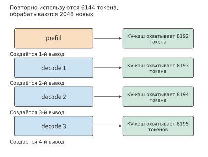
Рисунок 3-1. Восстановление 6144 токенов контекста, обработка 2048 новых входных токенов и генерация 4 выходных токенов. Первый выходной токен создаётся на этапе prefill, каждый из последующих трёх decode добавляет ещё один токен; вертикальное направление показывает порядок вызовов, а интервалы приведены для наглядности.
Оба этапа используют один и тот же набор весов, но предъявляют разные требования к ресурсам. Рассмотрим набор матриц весов: вход prefill содержит \(BP\) строк, тогда как на одном шаге decode их всего \(B\). При большом числе входных токенов однократно загруженные веса участвуют в большем количестве операций умножения и сложения; при decode с низким параллелизмом весь набор весов может считываться ради всего нескольких токенов. Отсюда и происходит утверждение, что «prefill обычно ограничен вычислительной мощностью, а decode — пропускной способностью памяти».
Возможности повторного использования возникают не только внутри одного запроса, но и между разными запросами. При одновременном выполнении нескольких decode они совместно используют веса, но каждый считывает собственный контекст; когда поступает длинный вход, prefill может одновременно обработать много заранее известных токенов, векторы признаков которых образуют входную матрицу с большим числом строк. Система обслуживания должна распределять время между заданиями такой разной формы. Простое суммирование общего числа токенов не учитывает, к какому этапу относится каждый токен и когда его можно обработать.
Упражнение 3-1 (углублённое): как число запросов изменяет количество вызовов модели при одинаковом суммарном объёме вывода
Рассмотрите два случая: один запрос выводит 1024 токена и восемь запросов выводят по 128 токенов каждый. Вход каждого запроса содержит 1024 токена. Найдите для обоих случаев число prefill, общее количество последующих шагов decode и длину контекста к моменту завершения каждого запроса. Предполагая, что восемь запросов генерируются синхронно, сравните число циклов чтения весов, если в каждом пакете веса считываются один раз совместно для всех запросов, а затем объясните, почему одинакового общего объёма вывода недостаточно для оценки времени завершения.
3.1.2 Цели задач и метрики оценки¶
Запросы к модели и пользовательские задачи обычно не соответствуют друг другу один к одному. Для ответа на вопрос может хватить одной генерации, тогда как исправление функции может потребовать чтения файла, изменения кода, запуска тестов и повторного изменения после ошибки. При оценке системы сначала определите критерий завершения, а затем решите, что именно измерять.
Сначала отметим на временной шкале три события: поступление запроса \(t_a\), возврат первого токена \(t_1\) и возврат последнего токена \(t_G\). Тогда
TTFT (time to first token) — время от поступления запроса до возврата первого токена; в этой книге оно также называется временем первого ответа. Время первого ответа показывает, через сколько времени начинается вывод, полная задержка запроса — через сколько времени завершается генерация, а средний интервал между токенами характеризует темп вывода. Сокращение некоторого временного отрезка непосредственно изменяет только те метрики, которые включают этот отрезок. Например, сокращение ожидания в очереди перед началом выполнения запроса улучшает TTFT, но не обязательно сокращает интервалы между токенами после начала генерации.
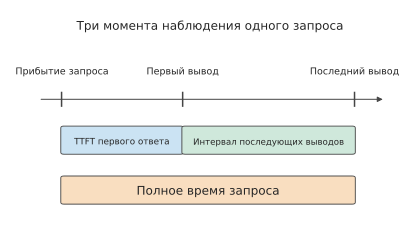
Рисунок 3-2. Поступление запроса, первый и последний выходные токены определяют три временных интервала. Время первого ответа включает ожидание перед началом генерации, интервал вывода описывает процесс генерации, а полное время запроса отсчитывается от поступления до завершения.
До поступления первого токена клиенту запрос последовательно проходит этапы ожидания в очереди, подготовки входных данных, вычислений на ускорителе и возврата результата. Исходное размещение входных данных — на хосте или ускорителе — определяет, где происходит их передача; после завершения вычислений результат ещё должен пройти обработку на хосте и отправку по соединению. Если записывать время начала и окончания каждого этапа одного запроса, можно определить, на каких этапах в основном расходуется TTFT. В главе 5 подробно рассматривается последовательность отправки задач ускорителю, передачи данных и завершения.
Когда клиент получает несколько токенов блоками, можно непосредственно записывать время поступления и число токенов в каждом блоке, а затем рассчитывать темп вывода. У reasoning-моделей появляется дополнительная точка наблюдения: прежде чем выдать видимый ответ, модель генерирует промежуточное содержимое рассуждений, называемое токенами рассуждения, поэтому при появлении первого внутреннего токена пользователь ещё не обязательно видит ответ. Следовательно, внутренней генерации, видимому пользователю выводу и завершению задачи соответствуют разные моменты времени. Для первого воспроизведения речи дополнительно требуются декодирование и буферизация устройства; это рассматривается в разделе 3.3.3.
| Вопрос, на который нужно ответить | Необходимая метрика или запись |
|---|---|
| Через сколько времени начинается ответ? | TTFT; для reasoning-моделей отдельно фиксируется первый полезный вывод |
| Непрерывен ли вывод? | Интервалы между токенами/блоками и их распределение |
| Через сколько времени задача будет завершена? | Полное время запроса, полное время задачи |
| Сколько соответствующих требованиям задач завершается за секунду? | Эффективная пропускная способность с учётом требований к качеству и срокам |
| Сколько стоит получить один успешный результат? | Суммарные затраты на модель, инструменты и окружение во всех попытках / число успешных задач |
| Что продолжает занимать ресурсы во время ожидания? | Запрос, которому принадлежит состояние, версия и размер модели, место хранения и время пребывания |
Учёт только среднего значения скрывает долю более медленных запросов. p95 — это 95-й процентиль, описывающий более медленную часть наблюдений выбранной метрики. В этой главе применяется метод ближайшего ранга: \(n\) наблюдений упорядочиваются по возрастанию, после чего выбирается наблюдение с номером \(\lceil0.95n\rceil\). Для четырёх запросов p95 равен максимальному значению, а для 480 запросов — 456-му значению. Если отдельно упорядочить длительность завершения запросов, ожидания в очереди и первого ответа, можно увидеть, на каком этапе возникает длительное ожидание; p95 полного времени запроса вычисляется непосредственно путём упорядочивания полной длительности каждого запроса.
Помимо времени ответа необходимо измерять ресурсы, занимаемые состоянием во время ожидания. Чем дольше состояние остаётся резидентным, тем меньше задач может одновременно обслужить одна и та же ёмкость. Пусть размер состояния задачи равен \(M(t)\). Тогда интеграл занятого состоянием пространства по времени равен
Если для каждого временного отрезка умножить занятое пространство на его длительность, а затем сложить результаты, получится площадь под кривой изменения занятого пространства во времени. Её единица измерения — byte·s: состояние размером 1 GiB, занимающее пространство в течение 10 секунд, соответствует 10 GiB·s. Размер состояния не увеличился, но всё это время данное пространство было недоступно другим запросам. Если задачи непрерывно поступают со средней скоростью \(\lambda\) задач в секунду, каждая занимает \(M_0\) байт и в среднем ожидает \(\tau\) секунд, то в стабильном состоянии средний объём пространства, занимаемый только ожидающими задачами, приблизительно равен \(\lambda M_0\tau\). Поэтому ожидание инструмента также становится проблемой ёмкости.
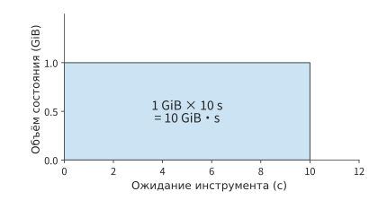
Рисунок 3-3. Состояние размером 1 GiB занимает пространство в течение 10 секунд, что соответствует площади 10 GiB·s. По горизонтальной оси отложено время резидентности состояния, по вертикальной — занятое пространство; площадь описывает совокупный объём хранения, занятый за этот период ожидания.
Помимо времени и состояния необходимо учитывать стоимость завершения задачи. Стоимость успешной задачи рассчитывается как сумма стоимости всех попыток, делённая на число успешных задач. Таким образом, неудачные генерации, проверки инструментами и работа окружения входят в числитель, а знаменатель соответствует числу полученных пользователями результатов требуемого качества. Если в пакете нет ни одной успешной задачи, фиксируются его суммарные затраты и причины неудач; после получения успешных результатов суммарная стоимость всех попыток делится на число успешных задач.2
3.1.3 Распределение запросов¶
Если в первую минуту ускоритель простаивал, а во вторую внезапно поступило много запросов, требующих длительной генерации, поздние запросы всё равно будут ждать в очереди: вычислительное время предыдущего простоя невозможно сохранить и использовать сейчас. TTFT и интервал вывода описывают работу с отдельным запросом; когда несколько запросов поступают последовательно, эти метрики также зависят от того, конкурируют ли запросы за вычислительную мощность в один и тот же период.
Описание нагрузки должно сохранять совместное распределение времени поступления, длины входа и длины вывода. Длинный запрос не только увеличивает собственное время обслуживания, но и может продлить резидентность состояния; раннее завершение короткого запроса, напротив, может позволить следующему запросу начаться раньше. Поэтому даже при одинаковом среднем объёме работы время ожидания, время завершения и пиковый объём состояния могут различаться. Ниже мы сохраним неизменными общее число запросов и среднюю длину двухминутной нагрузки из начала главы, сначала рассчитаем влияние порядка поступления на накопление очереди, а затем проведём наблюдение на реальной системе.
Реальные запросы часто поступают от разных клиентов. Один клиент преимущественно отправляет длинные документы, другой в основном генерирует длинные ответы; даже если форма запросов каждого клиента стабильна, изменение частоты поступления запросов от разных клиентов изменяет общую нагрузку. Исследование производственных сервисов ServeGen выявило это явление и воспроизвело распределение запросов с учётом состава клиентов и его изменения во времени.3
Пример 3-1. Почему возникает очередь, если средней производительности достаточно? Decode выполняется на двух RTX PRO 6000 Blackwell Workstation Edition. Определите, способны ли они непрерывно обрабатывать нагрузку из начала главы.
Решение. Определим два класса запросов: класс с длинным входом содержит 8192 входных и 256 выходных токенов, а класс с длинным выводом — 1024 входных и 2048 выходных токенов. За две минуты поступает по 240 запросов каждого класса, то есть в среднем четыре запроса в секунду. В одном варианте нагрузки доли обоих классов всегда равны; в другом варианте в первую минуту соотношение классов равно \(9:1\), а во вторую — \(1:9\). Первый выходной токен каждого запроса создаётся на этапе prefill, поэтому число последующих шагов decode на единицу меньше числа выходных токенов. Получаем:
| Временное окно | Новые входные токены/с | Последующие шаги decode/с |
|---|---|---|
| Равномерная смесь | 18,432 | 4,604 |
| Изменяющаяся во времени смесь, первая минута | 29,900.8 | 1,736.8 |
| Изменяющаяся во времени смесь, вторая минута | 6,963.2 | 7,471.2 |
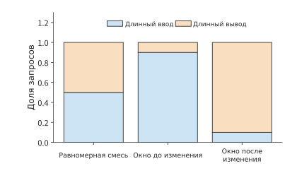
Рисунок 3-4. Состав запросов в трёх временных окнах с одинаковым суммарным объёмом за две минуты. Класс с длинным входом содержит 8192 входных и 256 выходных токенов, класс с длинным выводом — 1024 входных и 2048 выходных токенов; изменение соотношения классов изменяет требования этапов. Длина входа и вывода каждого класса измеряется в токенах.
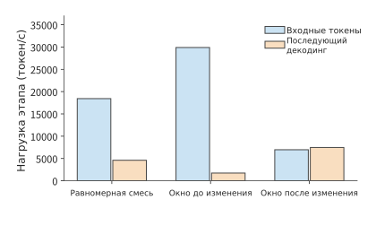
Рисунок 3-5. Требования к обработке входа и последующей генерации, соответствующие составу запросов в трёх временных окнах. Объём входа измеряется в токенах, последующая генерация — в шагах decode на запрос; первый выходной токен каждого запроса уже учтён в prefill. Входная составляющая показывает число новых входных токенов, обрабатываемых за секунду; составляющая decode показывает число последующих шагов decode, которые требуется выполнять за секунду для всех запросов, причём каждый шаг продвигает генерацию на один токен.
Предположения модели очереди: равномерное поступление внутри окна и постоянная скорость обработки. Используем жидкостную модель очереди, аппроксимируя дискретную работу генерации непрерывным потоком; внутри каждого окна запросы поступают равномерно, скорость обработки постоянна, а исходная очередь пуста. Единицей работы служит один последующий шаг decode одного запроса, производительность prefill учитывается отдельно.
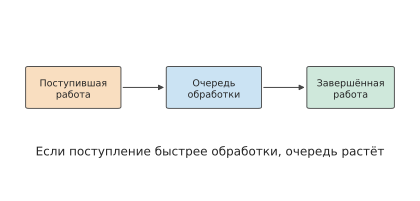
Рисунок 3-6. Работа сначала поступает в очередь, а затем выполняется вычислительными ресурсами. Если работа поступает быстрее, чем обрабатывается, разница остаётся в очереди; если обработка идёт быстрее поступления, ресурсы постепенно устраняют накопившийся объём работы.
Используя временное окно как шаг, накопившийся объём работы можно последовательно вычислять для каждого окна по формуле:
Здесь \(Q_k\) — объём необработанной работы в начале окна, \(A_k\) — новая работа, поступившая в течение окна, а \(\mu_k\Delta t\) — объём работы, который можно выполнить. Когда скорость поступления ниже скорости обработки, накопившийся объём постепенно уменьшается, пока очередь не опустеет; когда скорость поступления превышает скорость обработки, незавершённая работа переносится в следующее окно.
Скорость обработки \(\mu_k\) в рекуррентной формуле необходимо вывести из параметров оборудования. Первые выходные токены четырёх запросов в секунду создаются на этапе prefill, поэтому из 4,608 выходных токенов 4,604 относятся к последующим шагам decode. Скорость обработки decode определяется пропускной способностью видеопамяти. RTX PRO 6000 Blackwell Workstation Edition имеет 96 GB видеопамяти и пропускную способность 1792 GB/s; на каждой карте размещена полная копия весов Qwen3-8B BF16, и одновременно может выполняться не более 64 последовательностей. На каждом шаге decode необходимо как минимум один раз прочитать 15.14 GB общих весов, а затем считать весь предыдущий KV каждой последовательности; каждый токен контекста занимает 144 KiB. Во время decode средняя длина контекста класса с длинным входом составляет \(8192+127=8319\) токенов, а класса с длинным выводом — \(1024+1023=2047\) токенов; для равномерной смеси средняя длина контекста, взвешенная по числу шагов decode, равна \((255\times8319+2047\times2047)/2302\approx2742\) токенам. При одновременном выполнении 64 последовательностей за один шаг необходимо прочитать и записать не менее 41.02 GB, что занимает 22.89 ms; следовательно, одна карта может выполнять не более приблизительно 2,795.66 шага в секунду, а две карты — около 5,591.33 шага. Эта скорость обработки является физическим пределом, допускаемым пропускной способностью видеопамяти; фактическая скорость может быть только ниже. Для всех трёх временных окон используется одна и та же скорость обработки.
Пусть очередь decode изначально пуста, а работа генерации запросов равномерно поступает в каждом окне. Для равномерной смеси и первой минуты производительности достаточно; во вторую минуту каждую секунду сверх доступной производительности поступает \(7471.2-5591.33\approx1879.87\) шага, поэтому за 60 секунд накапливается около 112,792 шага. После прекращения поступления запросов для опустошения очереди потребуется ещё приблизительно 20.17 секунды согласно расчёту \(112792/5591.33\). Неиспользованную в первую минуту производительность невозможно сохранить до второй минуты — именно поэтому глобальное среднее значение скрывает накопление очереди.4
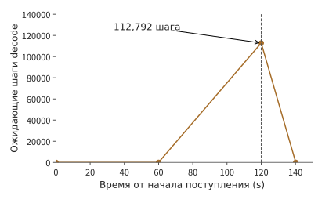
Рисунок 3-7. Жидкостная модель, в которой две RTX PRO 6000 могут выполнять не более приблизительно 5,591 шага decode в секунду. Во вторую минуту очередь возрастает до 112,792 шага; после прекращения поступления запросов на 120-й секунде она опустошается приблизительно за 20.17 секунды.
Как ограничение ёмкости KV влияет на очередь и время первого ответа. Запуск этих двух последовательностей поступления запросов на Qwen3-8B/vLLM 0.23 позволяет наблюдать, как описанные различия влияют на ожидание пользователей. В качестве ускорителя используется одна RTX PRO 6000 Blackwell Workstation Edition с 96 GB видеопамяти. Пул KV — это область видеопамяти, специально выделенная для контекста ключей и значений запросов; в данном эксперименте его ёмкость составляет 24 GiB, а одновременно может выполняться не более 64 последовательностей. Кэширование префиксов означает повторное использование между запросами уже существующего KV для одинакового начала; в данном эксперименте оно отключено, и каждый запрос генерирует указанное число токенов. При нехватке пространства KV планировщик может приостановить уже выполняющийся запрос, освободить занятое им пространство KV, а затем возобновить его или выполнить вычисления заново; такое поведение называется вытеснением. В обеих группах нагрузки за 120 секунд поступает 480 запросов. После завершения всех запросов получены следующие результаты.5
| Фактическое наблюдение | Равномерная смесь | Сначала 9:1, затем 1:9 |
|---|---|---|
| p95 полного времени запроса | около 299.4 s | около 299.4 s |
| p95 TTFT | 242.9 s | 258.9 s |
| p95 ожидания первого назначения на выполнение | 242.4 s | 258.4 s |
| Время от начала до завершения последнего запроса | 419.8 s | 418.7 s |
| События вытеснения | 62 | 24 |
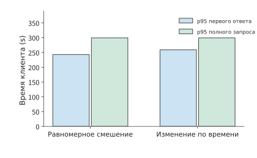
Рисунок 3-8. Результаты воспроизведения двух последовательностей поступления запросов на одном и том же реальном экземпляре. Значения p95 полного времени запроса близки, тогда как p95 времени первого ответа различается приблизительно на 16 секунд; модель, ускоритель, пул KV и предел параллелизма зафиксированы в соответствии с условиями эксперимента из основного текста.
В обоих воспроизведениях накопился значительный объём работы, что уже можно было предвидеть из нижней оценки, основанной на пропускной способности в примере 3-1: одна карта может выполнять не более приблизительно 2,796 шага decode в секунду, что ниже средней потребности равномерной смеси в 4,604 шага; кроме того, на той же карте необходимо выполнять prefill. Для 480 запросов требуется в общей сложности 552,480 последующих шагов decode, и даже только эта часть работы занимает не менее 197.6 секунды, тогда как все запросы поступают в течение 120 секунд.
Значения p95 полного времени запроса и время последнего завершения близки в обоих воспроизведениях, но TTFT и ожидание первого назначения на выполнение различаются приблизительно на 16 секунд. Записи выборки показывают, что в обоих экспериментах заполнение пула KV достигало 100%, а запросы долго ожидали перед началом выполнения. Распределение входов и выходов по времени изменяет моменты освобождения состояния и приёма новых запросов, поэтому даже при близком времени завершения всей группы пользователи могут начинать получать ответы в разное время. Вытеснение при заполнении пула KV также изменяет порядок ожидания и последующего выполнения запросов.
Таким образом, очередь может возникать как из-за недостаточной скорости обработки, так и потому, что состояние уже выполняющихся запросов ещё не освобождено: после заполнения пула состояний новые запросы должны ждать освобождения пространства существующими запросами, даже если часть вычислительных блоков простаивает.6
Рекуррентная формула накопления очереди из примера 3-1 позволяет прогнозировать её размер и при других условиях всплеска. Если скорость поступления работы \(\lambda_w\) непрерывно превышает скорость обработки \(\mu\) в течение \(\tau\) секунд, а очередь изначально пуста, то накопленный объём равен \((\lambda_w-\mu)\tau\); после прекращения поступления время опустошения очереди равно \((\lambda_w-\mu)\tau/\mu\). Если длительность всплеска удваивается, накопленный объём и время опустошения также удваиваются.
Упражнение 3-2 (основное): как всплеск запросов и ожидание инструментов увеличивают очередь и объём состояния
Возьмите интенсивность нагрузки второй минуты из примера 3-1, то есть 7,471.2 нового шага decode в секунду. Измените длительность этой всплесковой нагрузки на 30 секунд и рассмотрите ресурсы decode из двух и трёх RTX PRO 6000 Blackwell Workstation Edition; для каждой карты используйте скорость обработки около 2,796 шага/с, рассчитанную в примере 3-1. Изначально очередь пуста. Найдите изменение накопленного объёма работы во времени за эти 30 секунд и время, необходимое для опустошения очереди после прекращения поступления запросов. Затем рассмотрите другую нагрузку: каждую секунду два задания переходят в стадию ожидания инструмента, каждое ожидает 10 секунд и в это время занимает 1 GiB пространства состояния. Найдите среднее число ожидающих заданий и объём занятого состояния в стабильном режиме; повторите расчёт после увеличения времени ожидания до 30 секунд.
3.2 Многораундовое взаимодействие и задачи AI-агента¶
3.2.1 Многораундовый диалог и рост префикса¶
В разделе 3.1 каждый запрос рассматривался как отдельный вызов; в диалогах и задачах агента несколько вызовов одной задачи связаны последовательно. Следующий запрос в многораундовом диалоге обычно содержит контекст. В первом раунде передаются системный промпт и вопрос пользователя; во втором помимо нового вопроса может присутствовать ответ из предыдущего раунда; затем содержимое продолжает накапливаться в каждом раунде. Если учитывать только объём нового текста пользователя, длина входных данных, передаваемых модели, будет недооценена.
Пусть длина входных данных в раунде \(i\) равна \(I_i\), а длина повторно используемого префикса — \(K_i\). Тогда объём входных данных, который требуется обработать заново в этом раунде, равен
Подставив \(P_i\) и \(S_i\) в формулы из главы 2, получим, что проекции и FFN обрабатывают только новые токены, однако механизм внимания по-прежнему должен обеспечивать новым запросам доступ ко всему префиксу. Таким образом, повторное использование кэша сокращает повторные вычисления, но не исключает старый контекст из последующих вычислений.
Рассмотрим выгоду от кэширования на примере задачи исправления кода с четырьмя вызовами модели. Совокупная длина входных данных четырёх раундов составляет 5 297 токенов, из которых 4 480 попали в кэш, а 817 — нет. Во втором раунде входные данные содержат 1 443 токена, из которых 1 392 попали в кэш, поэтому требуется обработать лишь 51 некэшированный токен; однако последующий decode всё равно должен обращаться к состоянию контекста. Если в каждом раунде заново вычислять все входные данные, матричные операции prefill потребуют в сумме 76,196 TFLOPs; при повторном использовании найденного в кэше префикса потребуется в сумме 11,976 TFLOPs. Следовательно, попадание в кэш не только сокращает повторные вычисления для старых входных данных, но и требует от системы продолжать хранить старое состояние.7
Изменение контекста влияет на длину повторно используемого префикса. При добавлении нового содержимого в конец исходный префикс остаётся неизменным; если фрагмент старого контекста заменяется сводкой, представления после места замены необходимо заново вычислить от нового префикса; изменение определений инструментов или шаблонов может изменить входные данные ещё раньше. Эти операции определяют, сколько токенов в следующем раунде попадёт в кэш, а сколько снова поступит в prefill.
Стратегия работы с контекстом влияет и на будущую нагрузку. Постоянное добавление нового содержимого в конец контекста способствует повторному использованию исходного префикса, но устаревшее содержимое продолжает занимать место в контексте. Замена содержимого в начале позволяет сократить контекст, однако кэш для последующей части может потребовать перестроения. Стоимость сохранения, вытеснения и повторных вычислений зависит от объёма вычислений при перестроении, размера состояния и интервала повторного использования (глава 8).8
С помощью описанной в этом разделе зависимости повторного использования префикса сравним два способа редактирования: добавление 100 токенов в конец добавляет лишь 100 новых строк входных данных; если же изменить 501-й токен среди уже существующих 2 000, все последующие представления изменятся, а максимальная длина непосредственно повторно используемого префикса составит лишь 500 токенов. Выгода от кэширования зависит не только от объёма изменений, но и от их расположения.
С точки зрения приложения контекст служит интерфейсом оркестрации задачи; с точки зрения системы организация контекста определяет объём вычислений и время нахождения состояния в памяти. Добавление результатов инструментов, замена раннего содержимого и создание нескольких ветвей-кандидатов по-разному изменяют объём новых вычислений, повторно используемый префикс и приватное состояние. Зная эти зависимости, обслуживающая система может размещать кэш с учётом повторного использования, совместно использовать историю между ветвями и выгружать состояние на время ожидания инструментов. Поэтому журнал нагрузки должен также содержать стабильный префикс, позиции изменений, зависимости между ветвями и интервалы повторного использования. В главе 8 эти сведения будут использоваться для выбора стратегии контекста и кэширования, а в главе 9 к ним добавятся расположение состояния и время передачи.
3.2.2 Рассуждение и проверка: сколько стоит выполнение одной задачи¶
Кэширование префикса сокращает повторные вычисления для уже имеющихся входных данных. Другой класс методов, напротив, намеренно увеличивает объём вычислений при генерации в надежде повысить правильность ответа. Увеличить вычисления на этапе рассуждения можно тремя основными способами: удлинить процесс рассуждения в одном ответе, одновременно сгенерировать несколько ответов и выбрать один из них либо распределять число генераций и их длину в зависимости от сложности задачи. Удлинение рассуждения увеличивает время последовательной генерации и объём состояния контекста; генерация нескольких ответов увеличивает объём вычислений и количество проверок; распределение по сложности требует определить момент остановки для каждой задачи.
Чтобы понять, оправдано ли увеличение объёма вычислений при генерации, необходимо сравнивать стоимость одной успешно выполненной задачи. Пусть средняя стоимость одной попытки равна \(c\), а вероятность успеха — \(p\). Тогда ожидаемое число повторных попыток при неизменной стратегии равно \(1/p\), а значит,
Пусть стоимость и вероятность успеха нового метода равны соответственно \(c_2,p_2\), а старого — \(c_1,p_1\). Для снижения стоимости необходимо, чтобы выполнялось \(p_2/p_1>c_2/c_1\). Следовательно, удлинение рассуждения или увеличение числа выборок оправдано лишь тогда, когда относительный прирост правильности превышает относительный рост стоимости. В \(c\) учитывается стоимость всех генераций, проверок и неудачных попыток.
Пример: увеличение длины генерации не повысило вероятность успешного решения математических задач. Скорость генерации отражает полезность системы только при совместном рассмотрении с правильностью выполнения задачи. В одном эксперименте с математическими задачами для четырёх задач генерировалось по несколько ответов, а максимальная длина вывода была увеличена с 1 024 до 4 096 токенов, однако за два раунда попыток не удалось получить итоговый ответ, прошедший оценивание. Ресурсы на генерацию были израсходованы, но задача осталась невыполненной; увеличение длины вывода также не привело автоматически к получению корректного решения.9
При проверке ответа следует различать формат интерфейса и правильность содержимого. Ответ в правильном формате может содержать ошибку в вычислениях, а численно верный ответ может не включать поля, требуемые задачей. Только разделив эти два типа ошибок, можно определить, что именно следует изменить: способ генерации, ограничения на вывод или процесс решения задачи.10
При расчёте стоимости необходимо учитывать и изменение самой цены. Даже после снижения цены токена следует вычислять полную стоимость выполнения задачи. Рассмотрим простой пример: цена токена в новой системе снизилась до 1/10 от прежней, расход токенов на задачу вырос в 20 раз, а вероятность успеха увеличилась с 50% до 80%. Если учитывать только стоимость модели и считать распределение повторных попыток стабильным, отношение стоимости одной успешной задачи составит \(2\times\frac{0.5}{0.8}=1.25\). Снижение цены, повышение качества и рост стоимости успешной задачи могут происходить одновременно. Для агента с контекстом можно суммировать стоимость всех попыток по фактической траектории, а в качестве знаменателя использовать число задач, прошедших проверку.2
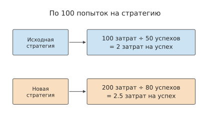
Рисунок 3-9. Учебное сравнение двух стратегий по 100 попыток. Стоимость всех попыток входит в числитель, а число успешных задач, прошедших проверку, — в знаменатель; стоимость успешной задачи для двух стратегий составляет соответственно 2 и 2,5 единицы.
Упражнение 3-3 (углублённое): может ли повышение вероятности успеха компенсировать рост стоимости одной попытки
Для старого метода стоимость одной попытки составляет 1 единицу, а вероятность успеха — 50%; для нового метода стоимость равна 2 единицам, а вероятность успеха — 80%. Рассчитайте среднюю стоимость выполнения одной успешной задачи и определите, какой метод экономичнее. Если стоимость нового метода снизится до 1,5 единицы, какой должна быть минимальная вероятность успеха, чтобы средняя стоимость успешной задачи не превышала стоимость старого метода? Для задач, требующих многократной выборки, объясните, как расходы на генерацию, проверку и неудачные попытки должны учитываться в общей стоимости.
Используйте пример запроса принятия решения из конца раздела 3.2.4: обработка одного запроса моделью принятия решений стоит 0,000081 доллара, а передача одного запроса LLM — 0,013880 доллара. Пусть вероятность успеха до и после передачи равна соответственно \(p_1,p_2\). Найдите среднюю стоимость одного запроса при доле передачи 1% и 5%; какого минимального значения должно достичь \(p_2/p_1\), чтобы передача снижала стоимость одной успешной задачи?
3.2.3 Нагрузка агента¶
Обратная связь также может изменять последующий процесс вычислений. Агент для работы с кодом сначала создаёт план изменений, инструмент записывает изменения в код и запускает тесты, после чего модель читает результаты тестирования и определяет следующий шаг. Каждый цикл включает как вычисления модели, так и выполнение инструментов; возвращаемые инструментами журналы становятся входными данными следующего раунда. Поэтому удаление нерелевантных записей из журналов снижает объём вычислений prefill и занимаемого состоянием контекста в следующем раунде, а сокращение числа бесполезных изменений непосредственно уменьшает количество циклов.
Практическая задача этой главы состоит в исправлении функции слияния интервалов и проверке правильности возвращаемого результата и неизменности входных данных. Модель принимает решения об изменениях и вызывает инструменты, а инструменты записывают изменения в файл и запускают тесты. Ниже отдельно учитываются время модели, время инструментов и состояние, сохраняемое во время ожидания, для траектории, на которой исходные проверки были успешно выполнены за четыре раунда. Подробности вызовов инструментов приведены в конце главы в разделе Траектория выполнения задачи с кодом.11
Вопросно-ответные системы с дополненной поиском генерацией также включают похожий процесс: средство поиска находит документы, после чего они передаются языковой модели для генерации ответа. При одинаковом качестве ответа меньший объём найденного содержимого сокращает последующие расходы на prefill, хранение KV и чтение контекста. Поэтому содержимое, возвращаемое средством поиска, непосредственно влияет на нагрузку модели. В главе 8 различные схемы поиска будут сравнены на конкретных задачах.12
3.2.4 Ветвление, ожидание инструментов и хранение состояния¶
Последовательность вызовов модели и выполнения инструментов можно представить в виде графа зависимостей. Вдоль последовательного пути длительности этапов складываются; независимые ветви могут запускаться одновременно, а точка их слияния ожидает более медленную ветвь. Путь с наибольшей суммарной длительностью от начала до конца в графе зависимостей называется критическим путём; именно он определяет минимально возможное время завершения задачи. Сначала на реальной задаче с кодом посмотрим, какая доля времени приходится на модель и инструменты, а затем изменим зависимости и оценим возможный выигрыш от параллельного выполнения. В таблице ниже сравниваются два запуска одной задачи с выключенным и включённым режимом рассуждения; этот режим определяет, генерирует ли модель сначала токены рассуждения, описанные в разделе 3.1.2.
| Наблюдение | Режим рассуждения выключен | Режим рассуждения включён |
|---|---|---|
| Число раундов вызова модели | 12 | 4 |
| Общее число выходных токенов | 765 | 2 733 |
| Суммарное фактическое время вызовов модели | 13,156 s | 76,294 s |
| Суммарное фактическое время выполнения инструментов | 0,476 s | 0,078 s |
| Проверки правильности возвращаемого значения и неизменности входных данных | 315/1013 | 1013/1013 |
| Дополнительная проверка: отсутствие алиасов у возвращаемых подсписков | 1/1013 | 710/1013 |
При выключенном режиме рассуждения доля попаданий в кэш составляла около 83,4%, однако код так и не был исправлен. После включения режима время работы модели увеличилось, но обе исходные проверки — правильности возвращаемого значения и неизменности входных данных после вызова — прошли полностью. Дополнительная проверка отсутствия алиасов требует, чтобы возвращаемые подсписки были независимы от исходных входных данных. При включённом режиме рассуждения программа прошла 710 таких проверок, однако в остальных 303 случаях подсписки по-прежнему были общими.11 Две группы проверок соответствуют различным свойствам программы, что показывает необходимость формулировать критерии выполнения задачи в виде конкретных исполняемых проверок.
При включённом режиме рассуждения задача вывела в общей сложности 2 733 токена: 2 553 до маркера окончания рассуждения, обозначающего завершение его содержимого, 3 токена самого маркера и 177 токенов после него. На рассуждение приходится основная часть работы по генерации, а вызовы инструментов преобразуют решения модели в операции изменения файлов и запуска тестов. Если сложить фактическое время вызовов модели и выполнения инструментов в порядке исполнения, а затем добавить время управления и передачи, получится полное время ожидания пользователя до завершения задачи.
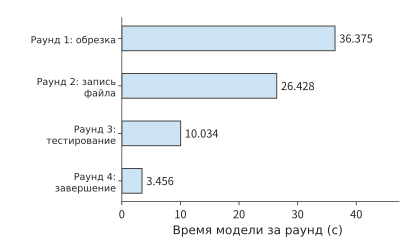
Рисунок 3-10. Фактическое время четырёх раундов вызова модели в задаче с кодом; время каждого раунда отсчитывается от его собственной точки начала. Суммарное время модели составляет 76,294 секунды, инструментов — около 0,078 секунды; полное время задачи также включает управление и передачу.
Пример 3-2: насколько ускорение вычислений модели в первом раунде сокращает время задачи с кодом? Выполните анализ с помощью закона Амдала из главы 1, предполагая, что последующее поведение и качество не изменяются.
Решение: возьмём за основу ту же траекторию выполнения и сократим вдвое вычисления модели в первом раунде, занимавшие 36,375 секунды, оставив без изменений остальные этапы, вывод, поведение инструментов и качество. Тогда общее время снизится с 76,510 до 58,323 секунды. В этом случае \(f=36.375/76.510\), \(s=2\), а общее ускорение составит приблизительно 1,31. Первый раунд занимает около 47,5% общего времени, поэтому его двукратное сокращение экономит около 23,8% общего времени; остальные этапы по-прежнему занимают в сумме около 40,1 секунды. Выгода от оптимизации зависит от первоначальной доли сокращаемого этапа.13
Зависимости между инструментами также влияют на общее время. Пусть модель сначала выполняет вычисления в течение 2 секунд, затем вызывает два инструмента длительностью 6 и 10 секунд соответственно, а в конце вычисляет ещё 3 секунды. Если второй инструмент зависит от результата первого, общее время составит \(2+6+10+3=21\) секунду; если инструменты независимы, общее время составит \(2+\max(6,10)+3=15\) секунд. Параллельное выполнение сокращает время на 6 секунд, однако суммарный объём работы двух инструментов по-прежнему равен 16 секундам.
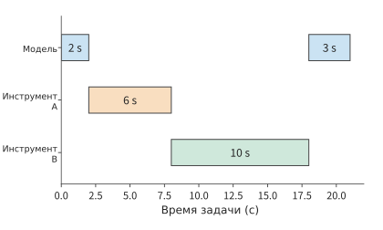
Рисунок 3-11. Временная шкала задачи с последовательной зависимостью между двумя инструментами. Модель сначала работает 2 секунды, инструмент A — 6 секунд, инструмент B — 10 секунд, после чего модель работает ещё 3 секунды; итого 21 секунда.
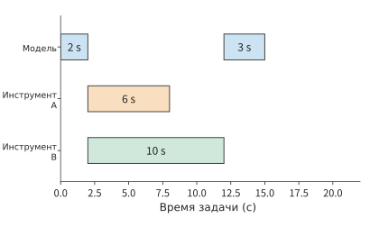
Рисунок 3-12. Если два инструмента независимы, их можно запустить одновременно. Модель продолжает работу после завершения более медленного инструмента B, и задача занимает в общей сложности 15 секунд. Масштаб времени совпадает с предыдущим рисунком; суммарный объём работы инструментов по-прежнему равен 16 секундам.
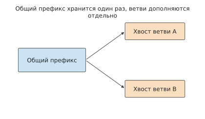
Рисунок 3-13. Две ветви генерации ссылаются на один общий префикс и отдельно сохраняют добавленные окончания. Стрелками обозначены связи ссылок; ёмкость общего префикса учитывается только один раз.
Параллельное выполнение и ветвление изменяют не только время, но и объём занимаемого состоянием пространства. Если каждая ветвь также должна отдельно генерировать текст, общий префикс можно совместно использовать, тогда как окончания ветвей растут независимо. Пусть длина общего префикса равна \(H_0\), ветвь \(i\) добавляет \(h_i\) токенов, а состояние одного токена занимает \(c_{\mathrm{KV}}\). Тогда общий объём состояния равен \(c_{\mathrm{KV}}(H_0+\sum_i h_i)\). Параллельное выполнение сокращает критический путь, но одновременно приводит к тому, что состояния большего числа ветвей занимают память.
В результатах измерений задачи исправления кода из раздела 3.2.3 вызовы инструментов занимают крайне мало времени, а основная его часть расходуется на вычисления модели. Если вместо этого инструмент выполняет компиляцию длительностью 10 секунд, то во время паузы модели контекст, необходимый следующему раунду, продолжает занимать ёмкость; если одновременно ожидают несколько задач, объём хранимого состояния суммируется по всем задачам. Чем дольше выполняются инструменты, тем дольше сохраняется состояние и тем меньше запросов система может обрабатывать одновременно. В главах 8 и 9 на этой временной шкале будут размещены операции кэширования и передачи.
Упражнение 3-4 (основное): сколько времени задачи экономят параллельное выполнение инструментов и локальное ускорение
Сначала модель выполняет вычисления в течение 2 секунд, затем вызывает два независимых инструмента длительностью 6 и 10 секунд соответственно. После завершения обоих инструментов модель вычисляет ещё 3 секунды, и задача завершается. Рассчитайте общее время задачи при последовательном и одновременном выполнении инструментов. Предполагая, что состояние размером 1 GiB занимает пространство только во время ожидания результатов инструментов, найдите для обоих способов выполнения произведение объёма состояния на длительность его хранения в GiB·s.
Результаты измерений задачи с кодом из этого раздела показывают, что общее время задачи составляет 76,510 секунды, из которых 36,375 секунды занимает вычисление модели в первом раунде, а суммарное время выполнения всех инструментов равно 0,078 секунды. Оставив прочие этапы неизменными, рассчитайте, сколько времени задачи экономит каждая из двух оптимизаций: четырёхкратное ускорение вычислений модели в первом раунде и двукратное ускорение выполнения всех инструментов. На основе результатов объясните, почему одного коэффициента локального ускорения недостаточно для определения выгоды оптимизации для всей задачи.
Требования нагрузки, в свою очередь, могут стимулировать изменения в архитектуре модели. Конкретный пример можно увидеть, если перенести тот же сеанс на DeepSeek V4.1 Flash. Предположим, у агента уже имеется общий контекст, после чего инструмент возвращает новые материалы. Если префикс не попал в кэш, сервису потребуется заново обработать большой объём входных данных, хотя вывод в этом раунде может быть коротким. Для подобных сценариев с преобладанием входных данных снижение стоимости prefill полезнее, чем оптимизация только пошаговой генерации. Поэтому V4.1 использует описанную в главе 2 архитектуру CED с 20 слоями причинного кодировщика и 20 слоями декодировщика: основная часть входных данных проходит только через основную часть кодировщика, а глобальный KV декодировщика проецируется из представления последнего слоя кодировщика. Для построения состояния SWA декодировщика в него повторно передаются выходы кодировщика максимум для последних 128 токенов промпта, что приближённо восстанавливает локальное состояние этого фрагмента. Выходные токены продолжают проходить через все 40 слоёв.46
Сначала сравним объём работы, связанный с вычислениями экспертных матриц, измеряя его суммой числа экспертных слоёв, через которые проходят все токены. Пусть входные данные, обрабатываемые из пустого состояния, содержат \(P\) токенов. Тогда обычный путь через 40 слоёв даёт \(40P\), а схема CED из отчёта — \(20P+20\min(P,128)\). При \(P=8192\) получаются соответственно 327 680 и 166 400, причём второе значение составляет около 50,8% первого; при \(P\leq128\) эта составляющая не сокращается.
При наличии готового префикса объём работы по обработке входных данных совместно определяется длиной добавления и способом восстановления. Если SWA кодировщика найден в кэше, основная часть кодировщика может продолжить обработку добавленных входных данных; если SWA кодировщика отсутствует, сначала повторно воспроизводится окно в конце префикса. После этого оба пути должны построить SWA декодировщика для текущего раунда. В главе 8 на учебных примерах контекстов 8K и 128K будут сравнены стоимости сохранения состояния и повторного выполнения.
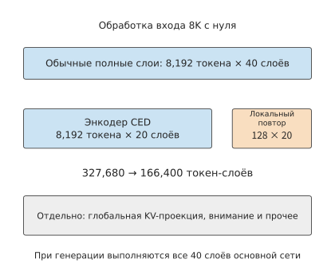
Рисунок 3-14. Сумма числа экспертных слоёв, через которые проходят все токены в одном пакете входных данных размером 8K. Обычный путь через все слои выполняет 40 слоёв; путь CED выполняет 20 слоёв кодировщика и повторно воспроизводит 20 слоёв декодировщика для последних 128 токенов. Компоненты, обозначенные серым, по-прежнему требуется вычислять отдельно; на этапе генерации выполняется вся основная сеть.
Пример расчёта: почему Jev выдаёт ответ в мгновение ока. В сентябре 2026 года компания TypeSafe AI, основанная бывшим исследователем OpenAI Diogo Almeida, выпустила модель Jev. По словам основателя в статье о выпуске, в OpenAI он участвовал в разработке методов, обучавших языковые модели следовать инструкциям и вести диалог с людьми; впоследствии эти работы стали частью исследований, лежащих в основе ChatGPT.14 Официальная демонстрация Jev выглядит впечатляюще: для одного и того же запроса службы поддержки GPT-5.6 Terra потребовалось 8,566 секунды, а Jev — всего 0,114 секунды, при этом стоимость Jev составила лишь 1/171 от стоимости первой модели. У многих сразу возникает вопрос: действительно ли это всё ещё Transformer? Не используется ли какая-то выдающаяся infra? После прочтения этой книги станет понятно, что никакого секрета здесь нет и читатель также сможет без труда это реализовать.
Jev не генерирует текст. Вызывающая сторона передаёт состояние, например заявку службы поддержки, и несколько вопросов с заранее заданными вариантами ответов, а модель возвращает вероятности этих вариантов. Если вернуться к цепочке вызовов из раздела 3.1.1, такой запрос содержит только prefill и не содержит decode. Состояние и все вопросы объединяются и обрабатываются за один прямой проход, а распределение на выходе в последней позиции каждого вопроса и является ответом. Это похоже на несколько ветвей на рисунке 3-13, расходящихся из одного префикса: каждая делает только один шаг и останавливается. Вопросы не зависят друг от друга, а после завершения запроса хранить KV не требуется. Возможность непосредственно интерпретировать эти вероятности как уровень уверенности обеспечивается обучением: TypeSafe называет свой метод RLCD. Его идея совпадает с академическим методом RLCR — оба добавляют к вознаграждению оценку Брайера, чтобы выдаваемые моделью вероятности соответствовали фактической доле правильных ответов.15
Проверим это в условиях, используемых в книге. Jev взимает плату только за входные данные — 0,042 доллара за миллион токенов; в демонстрации Jev стоил 0,000081 доллара, что соответствует примерно 1 929 входным токенам. Если выполнить такой запрос на Qwen3-8B, один прямой проход потребует около 28 TFLOPs, что при 40-процентной вычислительной эффективности H100 SXM займёт примерно 70 ms — сопоставимо с 0,114 секунды в демонстрации. При замене на DeepSeek V4.1 Flash и использовании пути CED объём вычислений увеличится лишь примерно на четверть. Если передать запрос обычной LLM, после prefill потребуется последовательно генерировать токены, причём каждый шаг ограничен пропускной способностью памяти и занимает около 9 ms. При генерации 64 токенов задержка возрастёт до 0,65 секунды, что в 9 раз больше задержки запроса принятия решения; однако благодаря пакетной обработке decode время GPU увеличится лишь на 28%. На рисунке 3-15 оба способа выполнения показаны на одной временной шкале: мгновенный ответ достигается за счёт исключения последовательной генерации.16
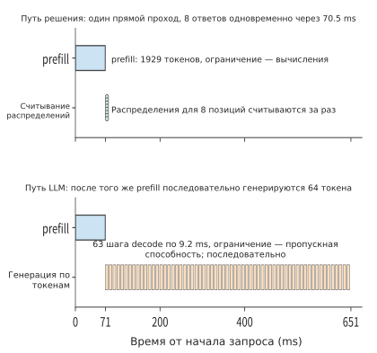
Рисунок 3-15. Два способа выполнения одного запроса из 1 929 токенов на H100 SXM. Вверху показан запрос принятия решения, где после одного прямого прохода одновременно считываются ответы на 8 вопросов; внизу — обычная LLM, последовательно генерирующая 64 токена после prefill. Используется модель Qwen3-8B с вычислительной эффективностью 40% и эффективностью использования пропускной способности 50%.
Цена также не содержит никакой загадки. Если в соответствии с отчётом о системе инференса DeepSeek принять стоимость аренды GPU равной 2 долларам в час, то вычислительная стоимость обработки миллиона входных токенов плотной моделью 8B или V4.1 Flash составит около 0,02–0,025 доллара, а цена Jev превышает её в 1,7–2 раза. Иными словами, модель такого класса может обеспечить эту цену только за счёт обычного prefill; с другой стороны, если цена должна покрывать расходы, объём вычислений Jev на один токен вряд ли более чем вдвое превышает объём вычислений плотной модели 8B. Разница в стоимости в 171 раз из демонстрации лишь в малой степени обусловлена отсутствием генерации: на одной и той же модели исключение 64–512 выходных токенов сокращает время GPU только в 1,3–3,4 раза. Остальная разница связана с ценой самой передовой модели и большим количеством токенов, генерируемых во время инференса.
При практическом использовании запросы, в которых модель принятия решений недостаточно уверена, приходится передавать LLM для повторной обработки. Пусть доля передаваемых запросов равна \(e\), тогда средняя стоимость одного запроса составляет \(c_{\mathrm{dec}}+e\,c_{\mathrm{LLM}}\). При двух значениях стоимости из демонстрации достаточно, чтобы \(e\) превысило примерно 0,58%, и стоимость передачи LLM станет выше стоимости самой модели принятия решений. Поэтому стоимость \(c\) успешной задачи из раздела 3.2.2 также должна включать стоимость передачи. Экономичность модели принятия решений зависит от того, сколько запросов требуется передавать и насколько дорога принимающая их LLM.
3.3 Мультимодальность и взаимодействие в реальном времени¶
Результаты работы инструментов AI-агента обычно передаются в следующий раунд ввода в виде текста. Если на вход поступают изображения или непрерывный аудиопоток, перед вызовом модели необходимо дополнительно закодировать входные данные, а на выходе может потребоваться непрерывное воспроизведение. В этом разделе сначала рассматривается, как меняется форма данных между этапами, а затем — к какому моменту должен завершиться каждый этап.
3.3.1 Визуальное кодирование, генерация текста и состояние¶
Прежде чем изображение поступит в языковую модель, оно проходит предварительную обработку, визуальное кодирование и проекцию. Обозначим визуальное кодирование через \(\mathrm E\), языковой prefill — через \(\mathrm P\), а последующий decode — через \(\mathrm D\). Тогда один сеанс визуальных вопросов и ответов имеет базовую зависимость \(\mathrm E\to\mathrm P\to\mathrm D\). Размер изображения влияет на объём работы \(\mathrm E\), а количество визуальных токенов после кодирования — на объём работы языковой части; эти две составляющие следует рассчитывать отдельно.
Сначала подсчитаем визуальные токены, затем — размерность признаков каждого вектора. Пусть высота и ширина изображения после предварительной обработки равны \(H_{\mathrm{img}},W_{\mathrm{img}}\). Разобьём изображение на квадратные фрагменты (patch) со стороной \(p_{\mathrm{patch}}\), а затем объединим по \(r\) фрагментов вдоль каждой стороны. Тогда количество визуальных токенов равно
Рассмотрим конкретную конфигурацию. Изображение размером \(640\times640\) в визуально-языковой модели Qwen3-VL-4B при разбиении на фрагменты \(16\times16\) даёт 1600 фрагментов, а после объединения \(2\times2\) — 400 визуальных токенов. Итоговая ширина признаков равна 2560, поэтому BF16-тензор \([400,2560]\) с двумя байтами на элемент занимает \(400\times2560\times2=2{,}048{,}000\) байт.
Однако результат кодирования этим не ограничивается. Чтобы предоставить языковой модели визуальную информацию с разных уровней глубины, DeepStack передаёт признаки промежуточных слоёв визуального кодировщика в соответствующие языковые слои. Модель также берёт признаки трёх промежуточных визуальных слоёв этого типа и объединяет их с признаками последнего слоя. Полный тензор имеет форму \([400,10240]\) и занимает 8 192 000 байт, то есть 7,8125 МиБ. Четыре группы признаков соответствуют одним и тем же 400 визуальным токенам: ширина признаков увеличивается в четыре раза, но языковая последовательность по-прежнему пополняется 400 визуальными токенами. Объём матричных вычислений при визуальном кодировании составляет около 1,310 TFLOPs; декодирование и масштабирование изображения выполняются до кодирования, а языковые вычисления — после него.17
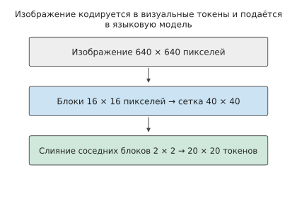
Рис. 3-16. Преобразование изображения из пиксельной сетки в визуальные токены. Квадратное изображение 640×640 разбивается на сетку из 40×40 фрагментов, соседние фрагменты 2×2 объединяются в один токен, образуя сетку 20×20, всего 400 визуальных токенов.
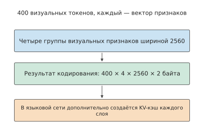
Рис. 3-17. Количество визуальных токенов и ширина признаков каждого токена измеряются отдельно. Четыре группы кодированных признаков BF16 размерностью 2560 занимают 7,8125 МиБ; после поступления этих визуальных токенов в языковую модель дополнительно создаётся KV-состояние каждого слоя.
На рис. 3-16 и 3-17 визуальное кодирование изменяет количество визуальных токенов и ширину признаков; после поступления в языковую модель создаётся ещё одно представление. Кэш кодировщика (encoder cache, EC) хранит выходные данные визуального кодировщика, а языковая магистраль создаёт KV-кэш. В этой конфигурации языковой KV-кэш занимает 144 КиБ на токен, поэтому 400 визуальным токенам соответствует 56,25 МиБ. Таким образом, один и тот же учебный снимок экрана на трёх этапах обработки представлен разными объёмами данных: исходный сжатый файл — 0,8 МБ, полный BF16 EC — 7,8125 МиБ, логический KV-кэш визуальных токенов — 56,25 МиБ.18
| Объект | Размер в этом примере | Условие возможности повторного использования |
|---|---|---|
| Сжатый снимок экрана | 0,8 МБ, заданный вход | Одинаковое содержимое файла |
| Полный результат кодирования EC | 7,8125 МиБ | Совпадают изображение, предварительная обработка, кодировщик и формат вывода |
| Языковой KV-кэш визуальных токенов | 56,25 МиБ | Дополнительно зависит от предшествующего контекста, порядка, позиций и состояния модели |
Если изображение и конфигурация кодирования совпадают, EC можно использовать повторно. Языковой KV-кэш также зависит от контекста перед изображением: если вопрос расположен перед изображением, замена вопроса изменяет KV-кэш визуальных токенов; если вопрос расположен после изображения, то благодаря причинному вниманию KV-кэш предшествующих визуальных токенов остаётся неизменным.
Оценка ёмкости состояния кодирования и KV-кэша для мультимодального ввода. Пусть вход содержит четыре изображения и 400 текстовых токенов. Рассчитаем EC и логический KV-кэш этих входных токенов. EC четырёх изображений одинаковой спецификации занимает 31,25 МиБ, а KV-кэш визуальных токенов — 225 МиБ; с добавлением 400 текстовых токенов логический KV-кэш входа составляет 281,25 МиБ.
Исходное изображение, EC и KV-кэш — это три представления данных, соответствующие трём различным точкам передачи. При передаче исходного изображения принимающая сторона должна ещё выполнить визуальное кодирование; при передаче EC она начинает с языкового prefill; при передаче KV-кэша передаётся уже сформированный языковой контекст. В главе 8 рассматривается выполнение на одном ускорителе, в главе 9 сравнивается передача между этапами, а в главе 12 тот же поток данных размещается на канале «устройство — периферия — облако».
Если оставить размер фрагментов и способ объединения неизменными, но удвоить высоту и ширину изображения, количество визуальных токенов увеличится в четыре раза. Поэтому EC и языковой KV-кэш визуальных токенов также увеличатся в четыре раза; взаимодействие токенов внутри визуального кодировщика необходимо дополнительно рассчитывать с учётом структуры внимания. Объединение признаков увеличивает ширину, а увеличение изображения — количество визуальных токенов; в языковой магистрали эти изменения приводят к разным последствиям.
3.3.2 Процессы вычисления при генерации аудио и изображений¶
При визуальных вопросах и ответах языковая модель по-прежнему генерирует текст токен за токеном. Если же выходными данными являются звук или изображение, изменяются как объём данных, обрабатываемых за одну итерацию, так и количество итераций.
При генерации аудио существует также внутрикадровый цикл. Рассмотрим модель генерации речи S2 Pro от Fish Audio. Медленный путь (slow) на каждом шаге продвигается на один аудиокадр, а быстрый путь (fast) внутри кадра дополняет индексы нескольких кодовых книг. Кодовая книга — это набор векторов-кандидатов дискретного представления звука, а кодек (codec) преобразует эти индексы обратно в звуковую волну. Для каждого кадра состояние сначала формируется одним прямым проходом по быстрому пути, после чего ещё девять предсказаний дополняют индексы кодовых книг. Таким образом, для генерации одного кадра требуется десять прямых проходов по быстрому пути. Следовательно, языковые токены в секунду, акустические кадры в секунду и продолжительность генерируемого аудио в секунду характеризуют разные скорости генерации.4519
При генерации изображений используется цикл другого типа. Латентное представление (latent) — это сжатое непрерывное представление изображения; в процессе удаления шума зашумлённое представление пошагово преобразуется в целевое изображение. Диффузионный Transformer (DiT) выполняет преобразование на каждом шаге, classifier-free guidance (CFG) объединяет условное и безусловное предсказания, а вариационный автокодировщик (VAE) преобразует пиксели в сжатое представление и обратно. Например, в модели генерации изображений Qwen-Image-2512 изображение размером \(1024\times1024\) образует 4096 латентных позиций и обрабатывается за 50 шагов удаления шума. В режиме true CFG на каждом шаге выполняются две ветви прямого прохода DiT, то есть всего 100 прямых проходов DiT. Объём матричных вычислений при удалении шума составляет около \(7{,}830\times10^{15}\) FLOPs; текстовый кодировщик и VAE выполняют собственную работу. Набор латентных позиций остаётся неизменным на протяжении удаления шума, а их содержимое обновляется на каждом шаге, поэтому суммарный объём работы растёт с количеством шагов удаления шума.20
Обозначим объём вычислений на одном шаге удаления шума через \(F_{\mathrm{step}}(n_v)\), количество шагов — через \(n_s\), а количество ветвей guidance на каждом шаге — через \(n_b\). Тогда общий объём вычислений равен \(n_sn_bF_{\mathrm{step}}(n_v)\). При удвоении количества шагов объём вычислений также удваивается; повышение разрешения увеличивает количество пространственных позиций в латентном представлении изображения, а вместе с ним — число строк матриц и объём взаимодействий между позициями внутри одного шага. При генерации текста контекст постоянно дополняется, поэтому объём обращений к нему растёт с каждым шагом; при удалении шума изображения многократно обновляется один и тот же набор латентных позиций, и при фиксированном разрешении суммарный объём вычислений линейно растёт с количеством шагов удаления шума.
3.3.3 Непрерывное восприятие, начало ответа и прерывание¶
Общий объём работы определяет среднюю потребность в обработке, но воспроизведение в реальном времени также требует своевременного поступления каждого блока данных. Пусть \(A(t)\) обозначает доступную для воспроизведения продолжительность аудио, поступившего к моменту \(t\), а \(P(t)\) — уже воспроизведённую продолжительность аудио. Тогда остаток аудио в буфере равен
Во время непрерывного воспроизведения за каждую прошедшую секунду воспроизведённая продолжительность \(P(t)\) увеличивается на одну секунду, а \(A(t)\) скачкообразно растёт по мере поступления блоков данных. Расстояние между двумя кривыми — это запас в буфере; если он опускается до нуля, а следующий блок ещё не поступил, звук прерывается. Предварительная буферизация увеличивает начальный запас, но одновременно откладывает начало воспроизведения.
Временные требования действуют как на входе, так и на выходе. Если агент, работающий со снимками экрана, наблюдает за экраном только после завершения действия, он может пропустить всплывающее окно, которое появилось и исчезло во время выполнения. Исследование непрерывного наблюдения и взаимодействия AOI посвящено именно таким сценариям: оно отделяет наблюдение за экраном от выполнения действий, непрерывно собирает изображения, аудио и события, а затем отбирает записи для использования моделью. Повышение частоты наблюдений позволяет обнаружить больше кратковременных событий, но сохранение большего числа ключевых кадров также расходует контекст; избыток ключевых кадров может вытеснить важную информацию и снизить качество выполнения задачи.21 Поэтому непрерывное наблюдение необходимо сочетать с фильтрацией, определяя, какие данные следует сохранить и передать модели для обработки.
Для речи временные ограничения ещё строже. После того как пользователь закончил говорить, система должна получить или подтвердить ввод, выполнить распознавание или кодирование, инференс, генерацию речи и воспроизведение. После начала воспроизведения последующие аудиоданные также должны поступать вовремя, чтобы избежать прерывания.
После поступления в приложение аудиоблоки должны пройти декодирование, постановку в очередь и воспроизведение. В двух измерениях речевого взаимодействия время от окончания речи пользователя до поступления первого аудиоблока составляло около 400 мс и 370 мс соответственно, а медианный интервал поступления последующих аудиоблоков в обоих случаях был около 94 мс.22 Время поступления показывает, когда данные становятся доступны, а часы воспроизведения определяют, когда именно прозвучит аудио.
Рассмотрим временную шкалу с приведёнными ниже параметрами, чтобы показать, как буфер между этими двумя процессами предотвращает прерывание звука. На входе каждые 20 мс формируется один блок; при частоте 24 кГц, одном канале и двух байтах на отсчёт размер каждого блока равен:
После завершения сбора каждого блока обработка моделью занимает 12 мс, отправка — 1 мс, а распространение по сети обычно требует ещё 5 мс. Первый блок поступает на 38-й мс, ожидает 40 мс в джиттер-буфере — буфере, который временно хранит поступившее аудио и сглаживает колебания времени поступления, — и начинает воспроизводиться на 78-й мс после начала сбора. Задержка распространения третьего блока задана равной 50 мс, поэтому он поступает только на 123-й мс, пропускает запланированный момент воспроизведения на 118-й мс и вызывает дополнительную паузу длительностью 5 мс. Хотя последующие блоки уже поступили, они должны ожидать воспроизведения в порядке звучания.
Если увеличить буфер до 60 мс, пауза исчезнет, но первое воспроизведение начнётся лишь на 98-й мс. Увеличение буфера позволяет избежать прерывания воспроизведения из-за данного колебания времени поступления, но ценой более позднего начала; если средняя скорость поступления аудио в течение длительного времени ниже скорости воспроизведения, конечный буфер всё равно рано или поздно опустеет.23
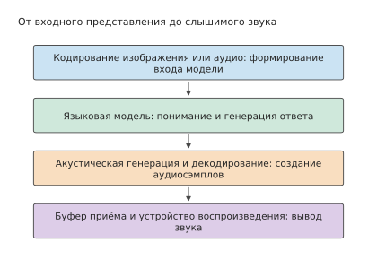
Рис. 3-18. Комбинируемые мультимодальные этапы. Кодирование формирует вход модели, языковая модель генерирует ответ, акустический модуль преобразует ответ в аудио, а буфер и устройство воспроизведения на принимающей стороне определяют момент фактического появления звука.
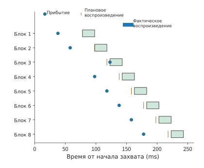
Рис. 3-19. Учебная временная шкала воспроизведения восьми аудиоблоков. Длительность каждого блока — 20 мс, точки обозначают поступление, короткие вертикальные линии — запланированные моменты воспроизведения, а цветные полосы — фактическое воспроизведение; третий блок опаздывает на 5 мс, из-за чего последующее воспроизведение сдвигается.
Помимо непрерывности воспроизведения, необходимо отдельно проверять реакцию на прерывание. На рис. 3-20 отсчёт начинается с момента подачи пользователем команды прерывания и продолжается до фактической остановки локального воспроизведения; остановку удалённой генерации необходимо определять по другому управляющему пути.
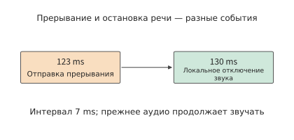
Рис. 3-20. Локальное прерывание в том же учебном сценарии. На 123-й мс подаётся команда, на 130-й мс устройство отключает звук; остановка удалённых вычислений относится к другому управляющему пути.
Прерывание включает несколько операций: приложение отправляет команду отмены, устройство воспроизведения отключает звук, бэкенд прекращает генерацию, а буфер и состояние освобождаются. На учебной временной шкале команда прерывания подаётся на 123-й мс, задержка управления составляет 5 мс, а устройство проверяет и выполняет управляющие команды каждые 10 мс. Поэтому звук отключается на 130-й мс, и воспринимаемая пользователем задержка прерывания равна 7 мс. Отключение звука устройством, прекращение генерации на бэкенде и освобождение буфера и состояния соответствуют трём отдельным моментам: остановке воспроизведения, остановке вычислений и освобождению хранилища. Прекращение генерации на бэкенде определяет, когда завершатся последующие вычисления, а освобождение буфера — когда его ёмкость станет доступна другим задачам.24
Непрерывный вывод требуется не для всех задач. RAW — это представление изображения, сохраняющее исходные данные, полученные сенсором камеры. При высококачественной обработке RAW-изображений важно, когда будет получен полностью готовый результат, но непрерывный вывод, как для речи, не требуется. Такая обработка также требует сохранения исходной информации изображения, поэтому EC, используемый для визуального понимания, не может заменить оригинал. Следовательно, разные задачи предъявляют разные временные требования: в одних результат должен появиться как можно раньше, в других необходима непрерывная плавная выдача, а в третьих важно как можно скорее завершить обработку целиком.
Упражнение 3-5 (расширенное): как разрешение изображения и аудиобуфер влияют на потребность в ресурсах
Измените разрешение входного изображения Qwen3-VL-4B с \(640\times640\) на \(1280\times1280\), оставив неизменными размер фрагмента, способ объединения и точность признаков. Найдите количество визуальных токенов, размер полного кэша кодировщика EC и размер KV-кэша, соответствующего этим визуальным токенам. Затем на основе временной шкалы аудио из этого раздела сравните момент первого воспроизведения и наличие пауз при начальном буфере 40 мс и 60 мс. Если каждую секунду поступает объём аудио, достаточный лишь для 0,9 секунды воспроизведения, а к началу воспроизведения накоплено 0,3 секунды аудио, определите, через какое время непрерывного воспроизведения буфер опустеет, и объясните, какую проблему позволяет решить увеличение конечного буфера.
3.4 Требования обучения к вычислениям и состоянию¶
3.4.1 Прямые вычисления, обратное распространение и обновление параметров¶
При инференсе веса используются для получения выходных данных, а при обучении веса также корректируются на основе расхождения между выходными данными и целевыми значениями. Рассмотрим простейшее умножение: входное значение x умножается на вес w, в результате чего получается y. После того как следующий слой передаст чувствительность функции потерь к y, для вычисления чувствительности функции потерь к w потребуется исходное значение x, а для передачи чувствительности на предыдущий шаг — значение w. Поэтому после передачи результата следующему слою некоторые входные данные необходимо сохранять до тех пор, пока они не будут использованы при обратном распространении.
Для линейного слоя \(Y=XW\) вход \(X\) имеет форму \([m,k]\), а веса \(W\) — \([k,n]\). Функция потерь \(\mathcal L\) — это числовая мера различия между выходом модели и целью обучения; задача обучения состоит в уменьшении потерь. Градиент описывает чувствительность потерь к небольшому изменению некоторого входа или параметра. При обратном распространении эти чувствительности передаются от выхода в обратном направлении по зависимостям. Пусть следующий слой передаёт градиент \(\partial\mathcal L/\partial Y\). Текущий слой должен вычислить два вида градиентов:
При прямом проходе вычисляется выход, а при обратном — отдельно градиенты входа и весов. Объём вычислений для всех трёх матричных умножений одинаков, поэтому объём матричных вычислений при обучении этого линейного слоя примерно втрое больше, чем при прямом проходе. В следующей таблице одна операция умножения со сложением считается за два FLOPs.
| Операция | Решаемая задача | Формы левого и правого входов | Форма выхода | Матричные FLOPs |
|---|---|---|---|---|
| Прямой проход \(Y=XW\) | Получить выход по входу | \([m,k]\) и \([k,n]\) | \([m,n]\) | \(2mkn\) |
| Градиент входа \(\mathrm dX=\mathrm dY W^{\mathsf T}\) | Передать ошибку предыдущему слою | \([m,n]\) и \([n,k]\) | \([m,k]\) | \(2mkn\) |
| Градиент весов \(\mathrm dW=X^{\mathsf T}\mathrm dY\) | Определить направление корректировки весов слоя | \([k,m]\) и \([m,n]\) | \([k,n]\) | \(2mkn\) |
Градиент входа передаёт сигнал ошибки предыдущему слою, а градиент весов определяет корректировку параметров текущего слоя. Рассмотрим размеры трёх групп матриц: хотя порядок умножения различается, каждая из трёх операций содержит одинаковое число \(mkn\) умножений со сложением, поэтому суммарно получается около \(6mkn\) FLOPs. Если все обучающие токены проходят через один и тот же набор основных матриц параметров, суммирование даёт распространённую оценку \(F_{\mathrm{train}}\approx6ND\), где \(N\) — число параметров, а \(D\) — общее число обучающих токенов.25
Изменения архитектуры также можно анализировать с помощью этого вывода. После замораживания матрицы весов вычисление её градиента можно исключить; если градиенты всё ещё нужны более ранним слоям, градиент входа необходимо вычислять по-прежнему. В MoE оба вида градиентов суммируются по выбранным экспертам, а в механизме внимания — по парам «запрос — ключ». Последовательно суммируя операции вдоль обратных зависимостей, можно получить объём вычислений, необходимый каждому методу обучения.
Помимо вычислений, обучение требует хранения новых состояний. Кроме \(X\), необходимого для вычисления \(\mathrm dW\), для получения градиентов нелинейных операций нужны соответствующие промежуточные результаты. Градиенты параметров создаются при обратном распространении, после чего оптимизатор использует их для вычисления обновлений параметров. Состояние оптимизатора хранит информацию, накопленную за несколько обновлений, поэтому его необходимо сохранять до следующего обновления. Срок хранения каждого вида данных определяется последней использующей его операцией: активации слоя обычно освобождаются после завершения обратных вычислений этого слоя, а импульс оптимизатора необходимо сохранять между множеством обновлений.
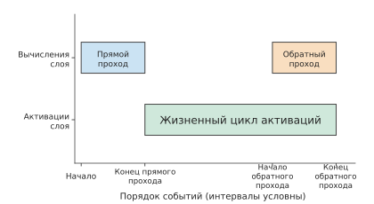
Рисунок 3-21. Жизненный цикл активаций: активации слоя сохраняются после завершения прямого прохода до окончания соответствующего обратного прохода. По горизонтальной оси расположены события, а расстояния обозначают лишь порядок процесса; после использования этих активаций соответствующими обратными вычислениями занимаемое ими пространство можно освободить.
Пример 3-3. Почему градиенты и состояние оптимизатора многократно увеличивают требования обучения к памяти?
Решение: рассмотрим 8 190 735 360 параметров Qwen3-8B. Необходимо хранить веса BF16, градиенты FP32, отдельную копию основных весов FP32 (master weight), а также две оценки моментов FP32 для Adam. Adam — это оптимизатор, регулирующий величину обновления на основе скользящих средних градиента и квадрата градиента; две оценки моментов хранят соответственно эти два средних значения. Без шардирования, то есть разделения этих состояний для хранения на нескольких картах, на каждый параметр требуется \(2+4+4+4+4=18\) байт, всего 147,433 GB, или около 137,308 GiB. Даже без учёта активаций эти состояния уже превышают заявленный объём видеопамяти одной H100 SXM (80 GB), RTX PRO 6000 Blackwell Workstation Edition (96 GB) и даже H200 (141 GB). Веса BF16 используются при прямых и обратных вычислениях, градиенты — для вычисления обновлений, основные веса FP32 — для высокоточного обновления, а две оценки моментов Adam накапливают статистику градиентов и их квадратов. В совокупности эти данные занимают в девять раз больше памяти, чем веса BF16 при инференсе.26
После определения требований к состоянию можно проанализировать, как данные поступают на обучение пакетами. micro-batch (микробатч) — это подмножество данных, фактически обрабатываемое за один прямой и обратный проход; полный обучающий batch может состоять из нескольких micro-batch. Следует также различать micro-batch и обновление параметров. Если видеопамять не вмещает полный обучающий batch, градиенты можно накапливать в течение нескольких micro-batch, а затем один раз обновить параметры. Если цель, эффективные метки и нормализация остаются неизменными, разбиение одного обучающего batch на большее число micro-batch изменяет порядок выполнения и жизненный цикл активаций, но не общий объём обучающих данных. В главе 10 на этой основе будут рассмотрены шардирование и конвейерное выполнение.
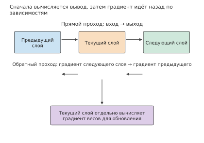
Рисунок 3-22. При обучении выход вычисляется по зависимостям прямого прохода, а затем градиенты передаются по обратным зависимостям. Текущий слой передаёт предыдущему слою градиент входа и одновременно вычисляет собственный градиент весов для обновления оптимизатором.
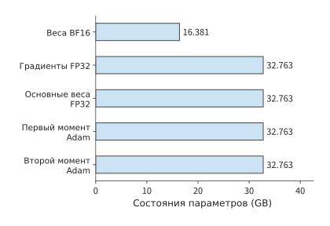
Рисунок 3-23. Связанные с параметрами состояния при полнопараметрическом обучении Qwen3-8B. На каждый параметр приходится 2 байта вычислительных весов и четыре состояния по 4 байта, всего 18 байт; требования к объёму памяти для активаций и рабочих областей рассчитываются отдельно с учётом их жизненных циклов.
Во время обучения также необходимо непрерывно подготавливать следующий пакет входных данных. CPU считывает, декодирует и токенизирует данные, формирует из них batch, а затем отправляет тензоры на ускоритель. Двойная буферизация позволяет во время вычислений для текущего batch подготавливать следующий: один буфер используется для чтения при вычислениях, а другой принимает новые данные, после чего они меняются ролями. Если вычисления завершились, а новые данные ещё не подготовлены, выполнение вынуждено ждать входных данных; при получении результатов с ускорителя оно также ждёт завершения соответствующих вычислений. В главе 5 на основе порядка выполнения прямого прохода, обратного распространения и обновления параметров будет рассмотрено, как подготовка данных совмещается с вычислениями.
3.4.2 Предобучение, промежуточное обучение и SFT¶
Независимо от названия этапа обучения система должна отвечать на одни и те же вопросы: сколько токенов поступает на вход, какие токены участвуют в вычислении потерь и через сколько micro-batch выполняется обновление параметров. При предобучении обычно выполняется предсказание следующего токена в непрерывном тексте; при промежуточном обучении корректируется состав данных или длина контекста; при дообучении с учителем (SFT) модель продолжает обучаться на заданных входах и целевых ответах, причём инструкции и ответы часто подаются вместе, а потери вычисляются только для ответов. При оценке ресурсов эти различия необходимо выразить через форму входа, число токенов, участвующих в обучении с учителем, и частоту обновлений.
Процесс обучения Qwen3 демонстрирует эти изменения: на общем этапе модель обучалась на последовательностях длиной 4096 и более чем 30 трлн токенов, затем в данные добавили материалы по естественным наукам, технологиям, инженерии и математике (STEM), код, рассуждения и синтетические данные и обучили модель ещё примерно на 5 трлн токенов; на этапе длинного контекста длина была увеличена до 32768.27 Состав данных изменяет изучаемое содержимое, а длина последовательности непосредственно определяет объём предшествующего контекста, доступного каждому токену, поэтому эти факторы необходимо рассматривать отдельно.
Системные требования меняются вместе с длиной. Предположим, что две группы независимых документов содержат по 8192 токена: первая — \(4096+4096\), вторая — \(7168+1024\). Число строк при проекциях параметров одинаково, но число эффективных пар «запрос — ключ» в причинном внимании составляет соответственно 16 781 312 и 26 218 496. Для одного слоя Qwen3-8B объём прямых вычислений \(QK^{\mathsf T}\) и \(AV\) возрастает примерно с 0,275 до 0,430 TFLOPs, то есть приблизительно на 56%. Токенам в более длинных документах доступно больше предшествующего контекста, поэтому при неизменном общем числе строк объём взаимодействий в контексте увеличивается; проекции и FFN по-прежнему обрабатывают те же 8192 представления токенов. Увеличение объёма вычислений всего слоя зависит от доли этих дополнительных взаимодействий в исходном объёме работы.25
При SFT число токенов, считываемых моделью, и число токенов, участвующих в вычислении потерь, часто различаются. Один пример может содержать системный промпт, вопрос пользователя, результаты инструментов и ответ, но потери при обучении вычисляются только для части с ответом. Остальные токены всё равно проходят через основную сеть, предоставляя контекст для ответа. Реализация также может вычислять проекцию на словарь только для токенов, участвующих в обучении с учителем; если токены, не участвующие в обучении с учителем, маскируются лишь при вычислении потерь, но их проекция на словарь не пропускается, соответствующее матричное умножение всё равно выполняется.
Помимо вычисления потерь лишь для части токенов, при дообучении можно обучать только часть параметров; тогда число параметров, для которых требуется хранить градиенты и состояние оптимизатора, также уменьшается. Веса замороженных модулей остаются неизменными, но градиенты всё равно должны проходить через них к более ранним обучаемым модулям, поэтому соответствующие градиенты входа необходимо вычислять. Последовательно определяя для каждого слоя обратного графа, требуется ли вычислять градиент входа и градиент весов, можно по отдельности рассчитать состояние обучения и объём вычислений.
Число micro-batch и обновлений определяет количество повторений работы. Пусть каждый micro-batch содержит \(B_\mu\) последовательностей длиной \(P\), а одно обновление выполняется после накопления \(a\) micro-batch. Тогда при каждом обновлении считывается \(aB_\mu P\) входных токенов. Если в каждой последовательности в обучении с учителем участвует только \(P_{\mathrm{label}}\) токенов, то число эффективных токенов, используемых при нормализации потерь, равно \(aB_\mu P_{\mathrm{label}}\). Увеличение числа шагов накопления позволяет увеличить batch одного обновления, разделив его прямые и обратные вычисления на несколько проходов; состояние параметров сохраняется постоянно, а активации каждого micro-batch можно освободить после завершения обратного прохода.
3.4.3 От оценки \(6ND\) к поэлементному расчёту затрат на обучение¶
После определения объёма обучающих данных и числа эффективных токенов можно рассчитать общий объём вычислений. Сначала можно выполнить грубую оценку на основе соотношения «обучение линейного слоя примерно втрое дороже прямого прохода», а затем поэлементно добавить внимание, словарную голову и обновление состояния, чтобы увидеть расхождение между грубой оценкой и полной моделью.
Рассмотрим один полный прямой и обратный проход при обучении: Qwen3-8B, \(B=1,\ P=8192\), полнопараметрическое обучение, словарная голова выполняется для всех входных токенов, повторных вычислений нет (то есть при обратном проходе не повторяется часть прямых вычислений ради сокращения объёма сохраняемых активаций). Поэлементное суммирование проекций, FFN, \(QK^{\mathsf T}\), \(AV\) и выходной головы по всем слоям даёт следующий объём матричных вычислений.26
| Матричные вычисления | TFLOPs |
|---|---|
| Матрицы прямого прохода | 143,789 |
| Матрицы обратного прохода | 287,579 |
| Прямой и обратный проходы | 431,368 |
| В том числе прямые и обратные вычисления причинного внимания \(QK^{\mathsf T}\) и \(AV\) | 59,381 |
| Оценка \(6ND\) по общему числу параметров | 402,591 |
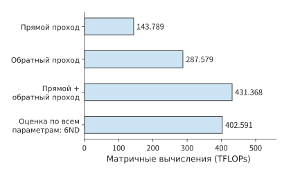
Рисунок 3-24. Полнопараметрическое обучение Qwen3-8B на входе из 8192 токенов. Словарная голова выполняется для всех входных токенов, повторных вычислений нет; поэлементное суммирование матричных операций даёт 431,368 TFLOPs для прямого и обратного проходов.
Чтобы скорректировать грубую оценку 402,591 TFLOPs до 431,368 TFLOPs, сначала необходимо определить, какие операции были пропущены, а какие учтены избыточно. Матричные умножения между запросами и контекстом не соответствуют отдельному набору параметров модели, однако при прямом и обратном проходах дают 59,381 TFLOPs. С другой стороны, такие модули, как встраивания токенов, хотя и содержат параметры, не выполняют полное матричное умножение для каждого токена, поэтому их нельзя безусловно учитывать по формуле \(6ND\). После взаимной компенсации двух поправок общий объём матричных вычислений оказывается примерно на 7,15% выше грубой оценки. Это первый тип расхождений, описанный в разделе 1.3.4: грубая оценка пропускает квадратичный член внимания и одновременно избыточно учитывает параметры, не участвующие в полном матричном умножении. Корректировать здесь нужно саму модель оценки, а не реализацию. Только скорректированную нижнюю границу можно использовать для оценки эффективности системы.
Если уменьшить число эффективных меток до 4096, но по-прежнему вычислять проекцию на словарь для всех токенов, объём матричных вычислений не изменится. Если сначала выбрать скрытые векторы токенов, участвующих в обучении с учителем, а затем выполнить проекцию на словарь только для них, общий объём снизится до 416,074 TFLOPs. Основная сеть по-прежнему обрабатывает весь вход, а экономия достигается за счёт исключения проекции на словарь для токенов, не участвующих в обучении с учителем; при обратном проходе градиенты затем возвращаются в соответствующие позиции.28
Нормализация, активации, функция потерь и оптимизатор также требуют вычислений, чтения и записи. Например, при обновлении параметров даже для короткой последовательности всё равно необходимо читать и записывать веса, градиенты и состояние оптимизатора; чем короче последовательность, тем выше обычно доля этих затрат в общем объёме. Поэтому при расчёте бюджета обучения необходимо учитывать как матричные вычисления, растущие вместе с числом токенов, так и затраты на обновление, определяемые числом параметров.29
Новые операции прямого прохода модели также добавляют соответствующие обратные вычисления. При сжатии контекста необходимо вычислять градиенты для проекций, пулинга и обновления состояния, в mHC — распространять градиенты по всем остаточным путям, а в MoE — вычислять градиенты для фактически выбранных экспертов.30 Поэтому вычислительный граф из главы 2 также позволяет определить, какие промежуточные результаты требуется сохранять при обучении и какие операции необходимо выполнять при обратном проходе.
Таким образом, при изменении длины последовательности сначала можно определить тенденцию изменения каждой статьи затрат: проекции параметров растут с числом входных строк, внимание — с числом пар «запрос — ключ», а обновления оптимизатора — с числом параметров и обновлений. При использовании повторных вычислений требования к объёму памяти снижаются, но повторно выполненные операции прямого прохода необходимо добавить обратно к \(F_{\mathrm{train}}\). Все эти изменения можно поэлементно объяснить с помощью одного и того же графа прямого и обратного проходов.
Упражнение 3-6 (расширенное). Сколько вычислений, состояния обучения и токенов с разметкой требуется для одного обновления параметров
Выведите из \(Y=XW\) размеры градиента входа и градиента весов и объясните, почему объём трёх матричных умножений одинаков. Для Qwen3-8B рассчитайте общий объём долговременного состояния обучения из расчёта 18 байт на параметр, затем замените градиенты на BF16 и определите сэкономленный объём памяти. Пусть каждый micro-batch содержит 2 последовательности, каждая из которых включает 4096 входных токенов, причём 1024 токена участвуют в обучении с учителем. Одно обновление параметров выполняется после накопления 8 micro-batch. Определите общее число входных токенов и эффективных токенов с разметкой, обрабатываемых при каждом обновлении. Объясните разницу в объёме вычислений между простым маскированием потерь для токенов, не участвующих в обучении с учителем, и выполнением проекции на словарь только для токенов, участвующих в обучении с учителем.
3.5 Обучение с подкреплением (RL)¶
3.5.1 Rollout, вознаграждение и проверка среды¶
Инференс начинается с внешнего запроса, а предварительное обучение — с уже имеющегося текста. Обучение с подкреплением (RL) использует обратную связь, полученную в результате действий, для улучшения последующих действий. В языковой модели стратегия представляет собой распределение вероятностей выбора следующего токена при заданном контексте. RL соединяет два процесса: текущая стратегия сначала генерирует ответ, затем обратная связь определяет, как обновить параметры, после чего обновлённая стратегия создаёт следующую порцию данных. Процесс генерации обычно называют rollout.
Этот подход к обучению уже применялся на практике публично: DeepSeek-R1 продемонстрировал метод, основанный на задачах на рассуждение и проверяемых вознаграждениях. Для задач, результаты которых легко проверить, например задач по программированию и математике, обратная связь может поступать от правил или тестов; для задач, требующих реальных действий, необходимо запускать инструменты и среду. Вознаграждение — это числовая оценка результата ответа или действия. Если вознаграждение генерирует другая модель, это также требует дополнительного инференса. Поэтому одна «итерация обучения» может включать несколько моделей, тесты на CPU, ожидание песочницы и обновление градиентов.31
В более новых моделях RL сочетается с другими этапами обучения. В DeepSeek V4-Flash сначала посредством SFT и RL обучаются эксперты в отдельных областях, а затем способности нескольких экспертов объединяются в одной модели с помощью дистилляции нескольких учителей на основе текущей стратегии (on-policy distillation, OPD). При дистилляции модель-ученик обучается на выходной информации, предоставляемой моделями-учителями; при OPD текущий ученик сам генерирует траектории, а учителя предоставляют распределения вероятностей возможных выходов в соответствующих позициях токенов, на которых обучается ученик. Поэтому прямой проход учителя становится отдельной модельной операцией между генерацией и обновлением; проверка по правилам предоставляет обратную связь посредством тестов или выполнения программ и требует отдельного набора вычислительных ресурсов.32
При анализе ресурсов в этом цикле сначала следует определить производителей и потребителей данных: стратегия генерирует токены, функция вознаграждения или учитель читает ответы, обучающий модуль читает обучающие примеры и создаёт новые веса, а отвечающие за генерацию экземпляры модели затем используют эти новые веса. Если одна из ролей замедляется, последующие роли вынуждены ждать; добавление моделей-учителей требует дополнительных прямых проходов и места для хранения весов. Все последующие схемы распараллеливания должны строиться на этой диаграмме зависимостей.
3.5.2 Эффективные примеры, обновление стратегии и синхронизация весов¶
После генерации ответов и вычисления вознаграждений необходимо решить, какие примеры использовать для обучения. Важно различать уже сгенерированные примеры и примеры, которые в итоге попадут в обновление: первые определяют затраты на генерацию, вторые — обучающий batch, и их количество необязательно совпадает.
Пусть за один раунд необходимо сохранить \(n_{\mathrm{keep}}\) примеров, а средняя доля сохраняемых сгенерированных примеров равна \(a\). Тогда ожидаемое требуемое количество сгенерированных примеров составляет
Если нужно сохранить 16 примеров, то при доле в одну вторую в среднем потребуется сгенерировать 32 примера, а при снижении доли до одной четверти — 64. Генерация и оценка обрабатывают все ответы, тогда как обновление параметров — только сохранённые примеры; снижение доли сохраняемых примеров увеличивает объём работы на первых двух этапах, но не приводит к пропорциональному увеличению batch обновления. В разделе 3.5.3 будут использоваться примеры одинаковой длины и заданные количества генерируемых примеров для сравнения этих двух случаев.
Решение о сохранении примера зависит от метода обучения и правил фильтрации. Некоторые методы используют неудачные ответы как отрицательную обратную связь, другие исключают обрезанные ответы или ответы с недействительным вознаграждением. Преимущество показывает, насколько некоторый ответ лучше или хуже принятой базы сравнения. При использовании относительного преимущества внутри группы необходимо также сравнивать вознаграждения нескольких ответов на одну и ту же задачу. Таким образом, количество сохранённых примеров определяет объём данных, обрабатываемых при обновлении, а вознаграждение и функция потерь — то, какие градиенты будут получены из этих данных.
Пример: как одинаковые вознаграждения устраняют обучающий сигнал внутри группы. При обновлении стратегии с использованием относительных вознаграждений внутри группы, если ответы одной группы получают одинаковые вознаграждения, то после вычитания среднего вознаграждения группы преимущество каждого ответа становится нулевым, как и соответствующий градиент стратегии. Такая ситуация может возникнуть, если все ответы правильны. Модель выполняет весь процесс генерации, оценки и обновления, но не получает от этой группы ответов сигнала, позволяющего различить лучшие и худшие варианты. Только различия в вознаграждениях дают ненулевое преимущество, благодаря которому функция потерь стратегии направляет изменение параметров в соответствующую сторону.33
На обучение также влияет способ усреднения функции потерь. Если целевая функция усредняется по всем эффективным токенам batch, то при накоплении градиентов отдельных micro-batch в качестве знаменателя необходимо использовать общее количество эффективных токенов во всём batch. Если сначала отдельно вычислить среднее для каждого micro-batch, а затем усреднить полученные значения, токены в micro-batch с меньшим количеством эффективных токенов могут получить больший вес. В главе 10 это различие будет рассмотрено на примере конкретных методов обучения.34
После обновления веса стратегии необходимо передать на сторону генерации. Если генерация продолжит использовать старую версию, следующая порция данных по-прежнему будет создана старой стратегией. Синхронный цикл может ждать готовности весов перед началом генерации; асинхронная схема позволяет частично перекрывать этапы, но требует учитывать версии и устаревание примеров. В этой главе сначала фиксируется данная зависимость, а в главе 10 будут рассмотрены передача управления, вытеснение, восстановление и распределение ресурсов.
3.5.3 Объём вычислений на каждом этапе при фиксированном количестве эффективных примеров¶
Это различие можно количественно оценить с помощью фиксированной цели: в каждом раунде для обновления необходимо сохранять 16 примеров. Если ответам сложнее пройти фильтрацию, сначала потребуется сгенерировать больше ответов.
Пример 3-4: насколько требуется увеличить объём вычислений при снижении доли сохраняемых примеров, чтобы сохранить прежнее количество примеров для обновления?
Решение: рассмотрим Qwen3-8B. Пусть дано восемь задач, для каждой генерируется по четыре ответа, \(P=1024,\ G=256\), а для одного обновления стратегии сохраняется в общей сложности 16 примеров. Эталонная модель (reference model — модель с фиксированными весами, используемая для ограничения степени отклонения стратегии) имеет ту же архитектуру, что и модель стратегии; веса обеих моделей хранятся отдельно. Эталонная модель выполняет по одному прямому проходу для каждого из 32 ответов; модель-учитель в этом примере не вызывается. Все примеры имеют одинаковую длину, генерация не завершается досрочно, а префиксы не используются совместно.35
При генерации для каждого ответа сначала однократно выполняется prefill, а затем 255 шагов decode. Во время обучения и оценки траектория уже определена, поэтому прямой проход можно выполнять в режиме teacher forcing: на каждом шаге предсказания используется уже определённый предыдущий токен траектории, а не ожидается его повторная генерация моделью. Поэтому эти известные токены можно вычислять совместно. Длина входа составляет \(P+G-1=1279\), а 256 выходных меток располагаются в соответствующих позициях. Для 16 сохранённых примеров общее количество входных токенов за одно обновление составляет 20,464, а контролируемых выходов — 4096. Входные токены определяют объём вычислений контекста, а токены, участвующие в контролируемом обучении, определяют, к каким выходам применяется функция потерь; в бюджет обучения эти величины входят отдельно.
| Этап | Обрабатываемые примеры | Объём матричных вычислений (TFLOPs) |
|---|---|---|
| Rollout prefill | 32 | 465.143 |
| Rollout decode, 255 шагов на пример | 32 | 129.056 |
| Эталонная модель, один прямой проход | 32 | 634.944 |
| Оценка учителем, задано ноль запусков | 0 | 0 |
| Обновление стратегии, один проход | 16 | 952.416 |
| Итого | Сохранено 16 примеров | 2,181.559 |
Обозначим суммарный объём вычислений для генерации одного ответа и прямого прохода эталонной модели через \(f_g+f_r\), а объём вычислений одного фиксированного batch обновления — через \(F_u\). Тогда
Эталонная модель читает полный ответ и может одновременно обрабатывать несколько известных токенов; генерация же продвигается последовательно, токен за токеном. Хотя в приведённой формуле объёмы вычислений складываются, формы матриц на каждом этапе всё равно необходимо учитывать отдельно, чтобы оценить время с учётом соответствующей эффективности выполнения.
Если доля сохраняемых примеров снижается с 1/2 до 1/4, но по-прежнему требуется получить 16 сохранённых примеров, то в учебном сравнении необходимо сгенерировать уже 64 ответа. Объём вычислений для генерации и эталонной модели удваивается, объём обновления остаётся неизменным, а общий объём матричных вычислений возрастает до 3,410.701 TFLOPs — примерно на 56.3%. Объём матричных вычислений в пересчёте на один сохранённый пример возрастает со 136.347 до 213.169 TFLOPs. Все дополнительные 1229.142 TFLOPs приходятся на генерацию дополнительных ответов и вычисления эталонной модели; количество попадающих в обновление примеров остаётся равным 16.36
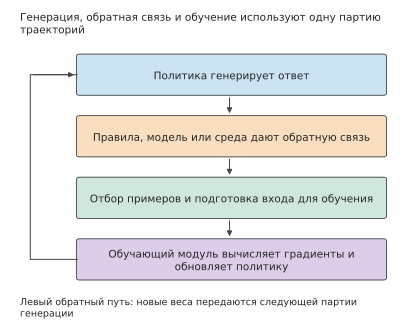
Рисунок 3-25. Роли и потоки данных в обучении с подкреплением. Сторона генерации создаёт ответы, этап обратной связи оценивает результаты, после фильтрации данные передаются обучающему модулю для обновления; новые веса затем используются при генерации следующей порции данных.
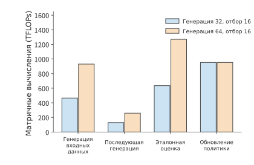
Рисунок 3-26. При сохранении целевого количества в 16 эффективных примеров число генерируемых ответов возрастает с 32 до 64. Обработка входных данных при генерации, последующий decode и оценка эталонной моделью растут вместе с общим количеством ответов, тогда как количество примеров, обрабатываемых при обновлении стратегии, остаётся неизменным.
После завершения обновления экземпляры для генерации должны получить новые веса. Пусть имеется \(r\) экземпляров, каждому из которых независимо передаётся полный набор весов размером \(M_W\). Тогда объём передачи составляет \(rM_W\). Один набор весов Qwen3-8B в формате BF16 занимает примерно 16.381 GB, поэтому для четырёх экземпляров потребуется передать в общей сложности около 65.526 GB. Состояние оптимизатора остаётся в обучающем модуле и используется при следующем обновлении; экземплярам для генерации нужны только веса, необходимые для выполнения прямого прохода. Широковещательная или иерархическая рассылка позволяет нескольким экземплярам совместно использовать часть пути передачи, сокращая повторную отправку данных.
При выделении ресурсов каждому этапу необходимо учитывать как объём вычислений, так и способ их выполнения. На этапе генерации каждый шаг decode обычно обрабатывает только один новый токен каждого запроса, поэтому при небольшом batch одновременно обрабатывается мало токенов; при оценке и обучении можно совместно обрабатывать несколько токенов уже известных ответов, а для проверки инструментами дополнительно требуются CPU и среда выполнения. Полный цикл можно получить, только отдельно оценив длительность каждого этапа и расположив их в порядке генерации, обратной связи, обновления и синхронизации весов. В главах 4–10 будут последовательно рассмотрены соответствующие аппаратные средства и методы планирования.
Упражнение 3-7 (основное): насколько увеличиваются затраты на RL при генерации дополнительных ответов, если количество примеров для обновления не меняется
Одно обновление по-прежнему использует 16 примеров одинаковой длины. Используя общий объём вычислений цикла из примера 3-4 для случаев генерации 32 и 64 ответов, найдите дополнительный объём вычислений для генерации и эталонной модели в расчёте на каждый дополнительный ответ, а также фиксированный объём вычислений, необходимый для одного обновления. Не изменяя количество примеров для обновления, на основе этих данных спрогнозируйте общий объём вычислений цикла при генерации 48 ответов. Затем добавьте модель-учителя с той же архитектурой, что и у генерирующей модели, и выполните для каждого из 48 ответов по одному прямому проходу; найдите дополнительный объём вычислений. Если обновлённые веса BF16 передаются четырём экземплярам и каждый экземпляр независимо получает полную копию, найдите общий объём передачи. Наконец, изобразите зависимости между генерацией, обратной связью, обновлением и синхронизацией и укажите, какие этапы могут перекрываться между разными batch.
3.6 От требований нагрузки к бюджету обучения и обслуживания¶
3.6.1 Scaling Law: взаимосвязь размера модели и объёма данных¶
Вычисления для одного обновления можно определить по отдельным составляющим, однако количество обучаемых параметров и объём используемых данных необходимо выбирать отдельно. Пусть общий вычислительный бюджет обучения равен \(C\), число параметров — \(N\), а число обучающих токенов — \(D\); тогда основные вычисления приближённо удовлетворяют равенству \(C=6ND\). При увеличении \(N\) приходится уменьшать \(D\). Чтобы выбрать соотношение между ними, нужно понимать, как параметры и данные по отдельности влияют на качество. Scaling Law (закон масштабирования) экспериментально аппроксимирует взаимосвязь между размером модели, обучающими данными и потерями. Ниже используется степенная модель, в которой слагаемые параметров и данных положительны, а конфигурация обучения и способ оценки потерь зафиксированы:
\(L\) — потери на валидации, \(E\) — асимптотические потери, \(A/N^\alpha\) описывает влияние недостаточного размера модели, а \(B/D^\beta\) — влияние недостаточного объёма данных. Здесь \(A,B,\alpha,\beta\) — коэффициенты аппроксимации. Отдельное увеличение числа параметров или объёма данных уменьшает соответствующее слагаемое, но при фиксированном вычислительном бюджете эти два слагаемых изменяются в противоположных направлениях.
Исключим объём данных с помощью \(D=C/(6N)\), а затем возьмём производную по \(N\). В оптимальной точке выполняется
Левая часть — снижение потерь за счёт увеличения числа параметров, правая — рост потерь из-за сокращения объёма данных. Когда они равны, небольшое дальнейшее изменение числа параметров уже не даёт чистого выигрыша. После преобразований получаем:
Полученное значение \(N_{\mathrm{opt}}\) является непрерывным; при практическом проектировании можно выбрать вблизи него подходящие число слоёв и ширину. Это оптимальное решение минимизирует потери на валидации только при фиксированном вычислительном бюджете обучения, не учитывая ни стоимость инференса после развёртывания, ни достаточность доступных данных. Если после запуска модель должна обслуживать большое число запросов, оптимальный выбор может сместиться в сторону меньшей, но более полно обученной конфигурации. В разделе 3.6.2 на основе записей об обучении открытых моделей будет проверено, насколько фактические затраты отличаются от этого прогноза.
Показатели распределения, полученные в разных исследованиях, различаются. В раннем исследовании Kaplan и соавторов было получено приблизительное соотношение \(N\propto C^{0.73},\ D\propto C^{0.27}\); исследование Chinchilla на основе других экспериментов и аппроксимации показало, что размер модели и объём данных должны расти с бюджетом ближе к одинаковым пропорциям. При первом варианте быстрее увеличивается число параметров модели, при втором больше дополнительного бюджета направляется на обучающие данные. Поэтому кривые и показатели их аппроксимации непосредственно влияют на выбор между параметрами и данными.37
Пример 3-5: позволяет ли аппроксимация масштаба обучения предсказать потери более крупных моделей? Выберите из открытых записей об обучении наблюдения для шести небольших моделей и используйте их для аппроксимации, а наблюдения для двух более крупных моделей отложите. Сначала выберите метод аппроксимации, затем сравните прогнозы для отложенных моделей с фактическими наблюдениями.
Решение: datablations — это открытые экспериментальные данные об изменении размера моделей и объёма данных, а C4 — использованный в этих экспериментах текстовый корпус. Возьмём восемь моделей: по шести меньшим аппроксимируем кривую, а две модели с \(N\ge2\times10^9\) оставим для проверки. Фактические потери двух крупных моделей составляют приблизительно 2,574 и 2,337, а прогноз аппроксимированной кривой — 2,583 и 2,363. Прогноз немного выше фактических значений, а среднеквадратичная ошибка составляет приблизительно 0,0193 нат/токен. Нат — единица количества информации при использовании натурального логарифма; нат/токен обозначает средние потери на токен. На рис. 3-27 точки аппроксимации и проверки обозначены разными символами.38
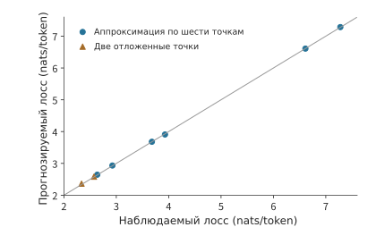
Рис. 3-27. Прогнозируемые и фактические потери для восьми открытых наблюдений C4. Шесть точек использованы для аппроксимации, две заранее отложены для проверки; диагональ соответствует равенству прогноза и наблюдения, а отклонение точки от линии отражает ошибку.
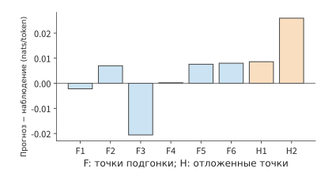
Рис. 3-28. Увеличенное представление ошибок прогноза для того же набора. F1–F6 — точки аппроксимации, H1–H2 — отложенные точки; по вертикальной оси показана разность между прогнозом и наблюдением с сохранением знака.
Проверка на отложенных данных необходима потому, что аппроксимация гарантирует лишь максимальную близость кривой к данным, по которым вычислялись коэффициенты. Только исключив крупные модели из аппроксимации и затем сравнив прогноз с фактическими потерями, можно проверить, способна ли эта зависимость предсказывать результаты для нового масштаба. Здесь две ошибки составляют приблизительно \(0.009\) и \(0.026\); если возвести их в квадрат, найти среднее и извлечь квадратный корень, получится среднеквадратичная ошибка.
После прогнозирования потерь на валидации необходимо также определить, способна ли модель выполнять практические задачи. В отчёте Llama 3 сначала прогнозируются потери по объёму вычислений обучения, а затем устанавливается взаимосвязь между потерями и результатами решения задач.39 Только после этого требования к качеству в задачах программирования, поиска и использования инструментов можно преобразовать в выбор масштаба обучения и объёма вычислений.
И аппроксимация, и прогноз основаны на наблюдениях одного запуска обучения, тогда как само обучение также подвержено колебаниям. При одинаковых данных и размере модели изменение случайной инициализации может привести к другим кривым обучения; более крупная модель, пока она недостаточно обучена, также не обязательно превосходит меньшую. Повторное обучение с несколькими случайными seed позволяет отделить тенденцию, вызванную изменением масштаба, от случайных колебаний отдельного запуска.41
При длительном обслуживании стоимость каждого вызова накапливается поверх бюджета обучения. Меньшая модель может достичь целевого качества за счёт более продолжительного обучения: первоначальные затраты будут выше, зато каждый последующий вызов потребует чтения меньшего объёма весов и выполнения меньшего числа операций. Работа Beyond Chinchilla-Optimal включает такую потребность в инференсе в анализ 47 моделей размером от 150M до 6B; модель 150M обучалась максимум на 10 000 токенов на параметр, а более крупные модели — максимум на 1 000.42 Бюджет обучения и число обслуживаемых запросов совместно определяют, когда меньшая модель окупит дополнительные затраты на обучение.
Затраты на обучение и совокупная стоимость обслуживания при фиксированных целевых потерях. Зафиксируем целевые потери аппроксимации на уровне 2,9, оценим затраты на обучение и обслуживание по числу матричных операций, а затем приведём их к GPU-времени H100 SXM — произведению числа GPU на время использования, измеряемому в GPU-секундах или GPU-часах. Для запроса примем \(P=512,G=128\); объём вычислений обучения равен \(6ND\), а объём вычислений одного полного запроса — \(2N[P+(G-1)]\). Пиковая производительность H100 SXM для плотных вычислений BF16 составляет 989,4 TFLOP/s. В отчёте Llama 3 для предобучения на H100 указана BF16 MFU (определение см. в разделе 1.2.2) в диапазоне 38–43%; для обучения и обслуживания примем 40%, что соответствует 395,76 TFLOP на одну GPU-секунду.39 Для модели 0,1B требуется приблизительно 298,6B обучающих токенов, что превышает верхнюю границу объёма данных, использованного для аппроксимации, поэтому на графике затрат эта экстраполированная кривая показана пунктиром. Согласно этой экстраполяции, обучение модели 0,1B требует приблизительно 125,7 GPU-часа H100 — на 73,5 GPU-часа больше, чем для модели 0,5B; зато каждый вызов расходует приблизительно на 0,00129 GPU-секунды меньше. Когда число вызовов достигнет приблизительно 204,8 миллиона, их совокупные затраты сравняются. До этой точки дополнительные затраты на обучение модели 0,1B ещё не окупятся; после неё накопленная экономия на каждом обслуживании превысит первоначальные вложения. Обучение и обслуживание приводятся с одним коэффициентом, поэтому точка пересечения зависит только от объёма вычислений, а не от принятого значения MFU.43
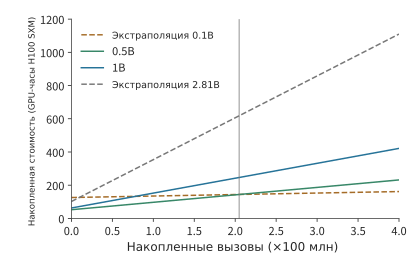
Рис. 3-29. Сравнение совокупных затрат на обучение и обслуживание в условиях задачи. Пересечение с вертикальной осью соответствует затратам на обучение, наклон — стоимости одного вызова; пунктиром показаны варианты, выходящие за диапазон параметров или данных аппроксимации, вертикальной линией — точка равенства затрат приблизительно на 204,8 миллиона вызовов. B в легенде обозначает миллиард параметров модели; по вертикальной оси отложены GPU-часы H100 SXM, пересчитанные при MFU 40%.
Вернувшись к распределению параметров и данных, можно непосредственно прогнозировать результат увеличения бюджета. Из выражения для оптимального решения следует \(N_{\mathrm{opt}}\propto C^{\beta/(\alpha+\beta)}\); подставив его обратно в ограничение вычислений, получаем \(D_{\mathrm{opt}}\propto C^{\alpha/(\alpha+\beta)}\). Если оба показателя равны, при четырёхкратном увеличении бюджета число параметров и объём обучающих данных удвоятся. Тем самым смысл показателей аппроксимации становится конкретным: они определяют, как дополнительные вычисления следует распределять между моделью и данными.
Упражнение 3-8 (расширенное): как распределить вычислительный бюджет между параметрами модели и обучающими данными
Используя модель потерь \(L=E+A/N^\alpha+B/D^\beta\) и ограничение вычислительного бюджета \(C=6ND\), выведите зависимости оптимальных числа параметров \(N\) и объёма данных \(D\) от вычислительного бюджета \(C\). Примите \(\alpha=\beta\) и определите, во сколько раз должны увеличиться оптимальные число параметров и объём данных при увеличении вычислительного бюджета соответственно в четыре и девять раз. Затем возьмите восемь наблюдений C4 из примера 3-5, используйте шесть для аппроксимации, а два — для проверки, вычислите ошибки прогноза для двух проверочных точек и объясните, почему ошибки на точках аппроксимации не могут заменить ошибки проверки на отложенных данных.
3.6.2 Затраты на обучение от Llama до Qwen¶
Аппроксимация из раздела 3.6.1 показала, как выбирать соотношение между размером модели и объёмом обучающих данных. В этом разделе по открытым записям об обучении моделей анализируются фактические затраты разработчиков: сначала сравнивается число обучающих токенов на параметр, затем алгоритмический объём вычислений отделяется от времени обучения на конкретном оборудовании.
Из опубликованных в отчётах этапов и масштабов видна следующая тенденция: при близком размере в 7–8B параметров число обучающих токенов продолжает расти.44
| Модель и охват отчёта | Обучающие токены | Приблизительная оценка \(D/N\) | Приблизительная оценка \(6ND\) |
|---|---|---|---|
| Llama 1, 6,7B | 1T | 149 | \(4.02\times10^{22}\) FLOPs |
| Llama 2, около 7B | 2T | 286 | \(8.40\times10^{22}\) FLOPs |
| Llama 3.1, около 8B | около 15T | около 1 875 | около \(7.20\times10^{23}\) FLOPs |
| Qwen2.5, около 7B, данные по серии моделей | около 18T | около 2 571 | около \(7.56\times10^{23}\) FLOPs |
| Qwen3, около 8B, данные по серии моделей | около 36T | около 4 500 | около \(1.728\times10^{24}\) FLOPs |
\(D/N\) выражает затраты данных как «число обучающих токенов на параметр». Для плотных моделей размером около 7–8B в таблице \(D/N\) выросло приблизительно со 149 до 4 500. Это показывает, что при близком числе параметров объёмы обучающих данных могут различаться на порядки. Первоначальная стоимость обучения растёт вместе с объёмом данных, но объём весов при каждом вызове после развёртывания по-прежнему определяется главным образом числом параметров. Поэтому более полное обучение небольшой модели может повысить единовременные затраты, одновременно снизив стоимость длительного обслуживания.
Эти значения также поясняют взаимосвязь между результатами аппроксимации из раздела 3.6.1 и фактическими затратами на обучение. При пропорциональном распределении Chinchilla вычислительно оптимальный объём данных для модели около 8B составляет приблизительно 20 токенов на параметр, то есть около 160B токенов. Фактические объёмы в таблице выросли с 1T примерно до 36T, превышая этот ориентир на один-два порядка. Они отвечают на разные вопросы: аппроксимация минимизирует потери на валидации при фиксированном вычислительном бюджете обучения, тогда как разработчики включают в целевую функцию стоимость обслуживания после запуска и при достаточном объёме данных и большом ожидаемом числе вызовов выбирают меньшую, но более полно обученную модель. Количественные условия такого выбора приведены в работе Beyond Chinchilla-Optimal, упомянутой в разделе 3.6.1, и в формуле точки равенства затрат из раздела 3.6.3. Оптимум бюджета обучения и оптимум полного жизненного цикла — разные цели; фактические затраты сверх первого не означают, что он был рассчитан неверно.
Более продолжительное обучение, фильтрация данных, дистилляция и постобучение позволяют за счёт дополнительных первоначальных работ повысить способность модели заданного размера решать задачи. При оценке базовых моделей в карточке Llama 3 модели Llama 3 8B и Llama 2 70B получили соответственно 66,6 и 69,7 балла в бенчмарке MMLU, охватывающем вопросы с выбором ответа из разных дисциплин, и 78,5 и 87,5 балла в бенчмарке TriviaQA-Wiki для ответов на вопросы по свидетельствам из Википедии.40 Различие между разрывами в этих двух оценках показывает, что сторона, выполняющая развёртывание, должна выбирать требования к качеству в соответствии со своими задачами. Только небольшая модель, достигшая порога качества, может преобразовать меньший объём весов в экономию ёмкости и чтения при обслуживании.
При анализе крупных моделей и MoE необходимо отдельно указывать общее и активное число параметров. Для DeepSeek-V3 сообщается 671B общих параметров, около 37B активных параметров на токен и 14,8T токенов предобучения; для DeepSeek V4-Flash — 284B / около 13B и 32T, а для DeepSeek V4-Pro — 1,6T / около 49B и 33T. Общий объём весов влияет на ёмкость, а активные параметры дают лишь грубую оценку объёма вычислений. Три проекции основных экспертов DeepSeek V4-Flash можно рассчитать отдельно:
Здесь \(n_L\) — число основных слоёв, \(h\) — размерность скрытого состояния, \(f\) — промежуточная размерность эксперта, а \(k_{\mathrm{routed}}\) и \(k_{\mathrm{shared}}\) — число маршрутизируемых и общих экспертов, выбираемых для каждого токена; коэффициент \(18=3\times2\times3\) последовательно соответствует трём проекциям, 2 FLOPs на каждое умножение со сложением и трёхкратному относительно прямого прохода суммарному объёму прямого и обратного проходов. Вычисления основных экспертов DeepSeek V4-Flash составляют приблизительно 45,4495 GFLOPs/токен, что при 32T токенов даёт около \(1.45438\times10^{24}\) FLOPs; для DeepSeek V4-Pro — около 169,2465 GFLOPs/токен и при 33T токенов около \(5.58513\times10^{24}\) FLOPs. Полный объём вычислений одного шага обучения складывается из этих матриц экспертов, внимания, маршрутизации, MTP, оптимизатора и повторных вычислений. Указанные в отчёте веса потерь также не являются долями выполнения: например, вес MTP 0,3 не означает, что выполняется лишь 30% вспомогательных вычислений.25
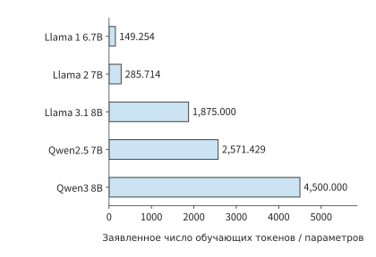
Рис. 3-30. Модели близкого размера обучаются на разном числе токенов. Значение столбца равно указанному объёму обучающих данных, делённому на число параметров; для Qwen используется опубликованный бюджет данных всей серии моделей.
Упражнение 3-9 (расширенное): какие требования к ресурсам изменяются при увеличении объёма обучающих данных или числа экспертов
Пересчитайте \(D/N\) и \(6ND\) по таблице Llama / Qwen. Если число параметров останется неизменным, а объём обучающих данных вырастет в четыре раза, спрогнозируйте изменение объёма вычислений обучения и чистой ёмкости весов после запуска. Для MoE объясните, можно ли считать, что при удвоении общего числа экспертов и неизменном числе экспертов, выбираемых на токен, ёмкость параметров и объём вычислений обучения экспертов увеличатся вдвое.
Помимо объёма вычислений затраты на обучение часто измеряют в GPU-часах. Если непрерывно используются \(n_{\mathrm{GPU}}\) ускорителей, а общее число GPU-часов равно \(H_{\mathrm{GPU}}\), фактическая продолжительность составит
Обучение Llama 1 65B потребовало 1 022 362 GPU-часа A100. При непрерывном использовании 2048 ускорителей это соответствует приблизительно 499,2 часа, или 20,80 дня; при той же эффективности ускорителей, но вдвое меньшем их количестве потребуется около 41,60 дня. GPU-часы отражают общие затраты, а число ускорителей определяет фактическое время выполнения этой работы.
В отчёте DeepSeek-V3 указано 2,664M GPU-часа H800 на предобучение; 14,8T токенов относятся только к этапу предобучения. При непрерывном использовании 2048 ускорителей это соответствует приблизительно 54,20 дня. Для последующего расширения контекста и постобучения приведены отдельные объёмы, но статистика разных этапов имеет разный охват, поэтому их нельзя вместе делить на число токенов предобучения.44
Чтобы преобразовать GPU-часы в фактическую продолжительность, их нужно разделить на число одновременно используемых ускорителей. Для Llama 3.1 405B возьмём опубликованные 30,84M GPU-часа H100 и предположим, что вся работа выполнялась на максимальном кластере из 16 384 ускорителей. Тогда фактическая продолжительность составит около \(30.84\times10^6/(16384\times24)\approx78.43\) дня. Если на определённом этапе используется меньше ускорителей, то то же число GPU-часов потребует больше фактического времени; следовательно, график распределения обучающих ресурсов определяет срок завершения обучения.
Указанные объёмы получены на трёх типах ускорителей, поэтому GPU-часы нельзя напрямую сопоставлять между устройствами. Пересчитаем их по пиковой производительности плотных вычислений BF16: для A100 80GB она составляет 312 TFLOP/s, для H100 и H800 — 989,4 TFLOP/s (H800 отличается лишь меньшей пропускной способностью межсоединений). Один GPU-час H100 или H800 приблизительно эквивалентен \(989.4/312\approx3.17\) GPU-часа A100. На рис. 3-31 три опубликованных значения приведены к эквивалентным часам A100 80GB. Пересчёт предполагает близкую фактическую утилизацию всех устройств и служит для сравнения масштаба затрат, а не различий в эффективности или стоимости.
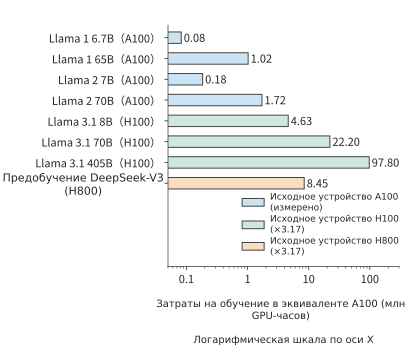
Рис. 3-31. Опубликованные затраты на обучение Llama и DeepSeek-V3, приведённые к эквивалентным GPU-часам A100 80GB. Для Llama 1 / Llama 2 приведены фактические часы A100; часы H100 и H800 пересчитаны по отношению пиковой производительности плотных вычислений BF16 \(989.4/312\approx3.17\), а для DeepSeek-V3 учтён только этап предобучения. Горизонтальная ось имеет логарифмический масштаб; пересчёт предполагает близкую фактическую утилизацию всех устройств и не отражает различий в эффективности или стоимости.
Все приведённые выше значения относятся к предобучению, однако затраты на постобучение также можно сравнивать в GPU-часах. В таблице 21 технического отчёта Qwen3 сопоставляются два варианта постобучения одной модели 8B — RL и OPD, требующие соответственно 17 920 и 1 800 GPU-часов. Эти варианты являются альтернативными, и каждый включает генерацию, обратную связь и обучение. Если соотнести GPU-часы с конкретными этапами и ускорителями, а затем учесть процесс выполнения каждого этапа, можно объяснить, на что в основном расходуются ресурсы обучения.
3.6.3 Стоимость полного жизненного цикла при соблюдении требований к качеству¶
Теперь объединим анализ из главы 2 и этой главы. Структура модели определяет необходимую для каждого вызова ёмкость хранения, объём вычислений и чтения; нагрузка определяет число вызовов и ожидание; обучение — затраты до запуска. Пусть первоначальные затраты модели \(m\) равны \(C_0(m)\), в будущем предстоит выполнить \(Q\) задач, доля задач класса \(j\) равна \(w_j\), а средняя стоимость выполнения одной задачи — \(c_j(m)\). Тогда
Перед сравнением все модели должны удовлетворять одинаковым требованиям к качеству, срокам и условиям завершения. Если вероятность успешного выполнения задач различается, \(c_j\) должна также учитывать неудачи и повторные попытки. При составлении бюджета необходимо указать и такие предположения, как изменение цен, срок службы модели, обслуживание и дисконтирование. Если для специализированного оборудования требуется длительный период развёртывания, условием выбора становится также срок использования версии модели.
Рассмотрим две модели, каждая из которых удовлетворяет требованиям к качеству и срокам. Если меньшая модель требует дополнительных затрат на обучение \(\Delta C_0\), но экономит \(\Delta c>0\) на каждой успешно выполненной задаче, число вызовов, при котором совокупные затраты сравняются, равно
Если дополнительное обучение меньшей модели требует 100 тысяч GPU-часов H100, то есть \(3.6\times10^8\) GPU-секунд, а каждая задача экономит 0,72 GPU-секунды H100, тогда \(Q_*=3.6\times10^8/0.72=5\times10^8\), то есть 500 миллионов задач. Если ожидаемый спрос ниже этого значения, дополнительные затраты на обучение ещё не окупятся; если выше — меньшая модель обеспечит большую совокупную экономию. Выбор совместно определяется ёмкостью, задержкой, качеством и числом вызовов; одного размера модели или цены токена для такого решения недостаточно.
Упражнение 3-10 (расширенное): продолжительность обучения и совокупная стоимость обслуживания
Предположим, что для завершения обучения требуется в общей сложности 1 022 362 GPU-часа A100 — опубликованное значение для Llama 1 65B. Рассчитайте число дней обучения при непрерывном использовании соответственно 2048 и 1024 ускорителей A100, предполагая, что общее число GPU-часов при изменении количества ускорителей остаётся неизменным. Затем сравните две модели, удовлетворяющие одинаковым требованиям к качеству и срокам: на обучение меньшей модели дополнительно затрачено 100 тысяч GPU-часов H100, но каждая успешно выполненная задача экономит 0,72 GPU-секунды H100. Какую модель следует выбрать при ожидаемом выполнении 200 миллионов и одного миллиарда успешных задач? Рассчитайте разность совокупных затрат и укажите, при каком фактическом числе задач выбор изменится на противоположный.
В последующих главах будут использоваться три типа информации о нагрузке, систематизированные в этой главе. В таблице ниже перечислены сведения, которые необходимо сохранять для каждого типа нагрузки, а также задачи проектирования системы, в которых они будут использоваться.
| Нагрузка | Обязательные поля | Последующее использование |
|---|---|---|
| Chat / AI-агент | Проверка задачи, модель и версия, вход / попадание / выход каждого раунда, поступление, зависимости от инструментов, ветвление и интервалы повторного использования | В главе 8 — планирование пакетной обработки и состояния; в главе 9 — передача и маршрутизация; в главе 11 — управление средой инструментов |
| Зрение / реальное время | Размер исходного изображения в байтах, \(\mathrm E/\mathrm P/\mathrm D\), EC/KV, поступление кадров или блоков, требования к первому ответу / непрерывному воспроизведению, вычисления, более не нужные после прерывания | В главах 8 и 9 — планирование кодирования и передачи; в главе 12 — добавление канала связи и места выполнения |
| Обучение / RL | Данные и качество, длина и метки, micro-batch / обновление, число сгенерированных / сохранённых образцов, вычисление вознаграждения и вызовы модели, версия весов, срок завершения | В главах 4–7 — анализ требований к вычислениям, хранению и обмену данными; в главе 10 — организация обучения; в главе 11 — настройка среды и пула ресурсов |
Все три примера показывают, что для описания нагрузки необходимо фиксировать конкретный процесс выполнения. В двухминутном запросе соотношение ввода и вывода в разные периоды определяет момент возникновения очереди; в агенте для работы с кодом зависимости от инструментов определяют время ожидания и продолжительность хранения состояния; в RL число образцов до и после фильтрации определяет объём данных, обрабатываемых на этапах генерации и обновления. Только располагая этой информацией, можно распределить ресурсы между этапами.
В главе 4 вычислительная производительность, ёмкость хранения и пропускная способность микросхем будут использованы для анализа выполнения этих нагрузок на ускорителях. Рассчитанные в этой главе размеры матриц, объёмы состояния и число обращений позволят определить продолжительность вычислений, возможность размещения данных и своевременность чтения и записи. Зависимости между этапами определяют, какие работы можно выполнять с перекрытием, а какие должны ожидать.
Заблуждения и ловушки¶
Заблуждение: если средняя частота запросов и их длина одинаковы, то и нагрузка одинакова. Небольшое число сверхдлинных запросов, сочетание длин входных и выходных данных, а также порядок поступления запросов влияют на кратковременную потребность в ресурсах. В задаче 3-1 вычислительной мощности достаточно для обработки среднего входящего потока, однако в следующую минуту всё равно образуется очередь.
Заблуждение: если цена токена снижается, то снижается и стоимость успешно выполненной задачи. Дополнительные рассуждения, ответы, не прошедшие проверку, инструменты и окружение должны учитываться в числителе, а число успешно выполненных задач — в знаменателе. Для batch с нулевым числом успешных задач можно сообщить только о затратах и неудачах, но нельзя оценить стоимость успешного выполнения.
Заблуждение: если общее число обучающих токенов одинаково, то и объём работы системы одинаков. Изменение распределения последовательностей меняет число пар «запрос — ключ» в механизме внимания, стратегии обработки меток и выходного слоя словаря меняют объём вычислений на выходе, а число обновлений влияет на затраты оптимизатора; при обучении с подкреплением (RL) также приходится нести затраты на генерацию и обратную связь для неиспользованных ответов.
Заблуждение: вычислительно оптимальный масштаб, полученный из аппроксимации закона масштабирования, и есть масштаб обучения, который следует использовать. Вычислительный оптимум справедлив только при фиксированном бюджете обучения и без учёта стоимости инференса. В открытых моделях число обучающих токенов на параметр превышает этот ориентир на один-два порядка — это выбор, сделанный после включения в целевую функцию долгосрочной стоимости обслуживания; различие целевых функций не означает, что результаты аппроксимации опровергнуты.
Траектория выполнения задачи с кодом¶
Задача состоит в исправлении функции объединения интервалов, чтобы она правильно объединяла вложенные интервалы и интервалы с соприкасающимися границами, не изменяя входные данные и содержащиеся в них списки. Модель может прочитать указанный файл, перезаписать его, запустить фиксированные тесты и завершить задачу; контроллер не изменяет код вместо модели. При отключённом режиме рассуждений модель за 12 раундов один раз прочитала файл, пять раз перезаписала его и шесть раз запустила тесты, но так и не завершила задачу. При включённом режиме четыре раунда соответственно включали усечённый вывод, запись файла, запуск тестов и завершение. Ожидание, вызванное усечением в первом раунде, также учитывается в общем времени выполнения задачи.11
Итоги главы¶
Нагрузка непрерывно работающего сервиса зависит как от объёма работы для каждого запроса, так и от времени поступления запросов и зависимостей между отдельными этапами. Средняя частота позволяет приблизительно оценить необходимые ресурсы, а анализ образовавшейся за короткое время очереди и времени пребывания в состояниях — выявить нагрузку на ресурсы, не отражённую средними значениями. Многораундовые задачи также включают ожидание инструментов и неудачные попытки; в задачах реального времени необходимо обеспечить своевременное поступление данных, а обучение дополнительно требует обратного прохода, обновления параметров и синхронизации весов.
Сравнивая ресурсы и стоимость разных решений, следует применять одинаковые требования к качеству и критерии завершения задачи. Scaling Law предоставляет проверяемую статистическую модель для распределения ресурсов на обучение, тогда как долгосрочные потребности сервиса могут повлиять на выбор первоначальных вложений. В основных упражнениях 3-2, 3-4 и 3-7 эти методы применяются соответственно к непрерывному потоку запросов, интерактивным задачам и циклу RL.
-
Архитектура модели в главе 2, соглашение о вызове запросов из §2.2 и подсчёт KV для Qwen3-8B; расчёт запросов для четырёх моделей. ↩
-
Исследование стоимости токенов за 2023—2026 годы, §2, §4 и §11; цены API, производственные затраты и стоимость успешно выполненной задачи рассматриваются отдельно. ↩↩
-
ServeGen, NSDI 2026, §2–7; заметки по изучению материалов и исходного кода. ↩
-
Распределение запросов и конфигурация ресурсов, требования этапов после фиксации двухминутного входного потока и коррекции первого токена; нижняя граница пропускной способности decode для 64 последовательностей на RTX PRO 6000, средний контекст принят равным 2742 токенам. ↩
-
Упражнение 3-2: реальное двухминутное воспроизведение, полный журнал входных данных, отправки и завершения, выборки KV и диапазон выполнения. ↩
-
Повторный расчёт реальной траектории с включённым режимом рассуждений. ↩
-
Организация контекста и пример AI-агента, связывающий главу 2 авторской книги об AI-агентах с журналом эксперимента. ↩
-
Упражнение 3-3: бюджет 1024 и бюджет 4096; теоретические основы см. в Test-Time Compute. ↩
-
Диагностика при отключённом режиме рассуждений, отдельно фиксирующая результат оценки по заранее определённым критериям, результат последующего извлечения ответа из вывода и данные наблюдения за параллельными процессами. ↩
-
Упражнение 3-4: две траектории агента для работы с кодом, включая независимую проверку и дополнительное условие для псевдонима. ↩↩↩
-
Двукратное ускорение только участка работы модели в первом раунде. ↩
-
Цены и параллельная демонстрация на главной странице TypeSafe AI; блог о выпуске содержит рассказ основателя, а также пояснения по параллельной выборке, RLCD и методике оценки; документация интерфейса поясняет, что варианты параллельно оцениваются в одном и том же состоянии. ↩
-
Beyond Binary Rewards: Training LMs to Reason About Their Uncertainty, вознаграждение RLCR из §3. ↩
-
Сравнение путей выполнения и цен для запроса на принятие решения, включая полный послойный путь V4.1 Flash, путь LLM с 512 выходными токенами и сопоставление с тарифами DeepSeek; расчёт можно воспроизвести командой
python3 calculations/calc.py decision-request --format md; обзор системы инференса DeepSeek с оценкой 2 доллара за GPU-час; модели и цены DeepSeek. ↩ -
Байты, состояния и распределение по этапам для мультимодального ввода, фиксированная конфигурация Qwen3-VL-4B, предварительная обработка и полный DeepStack EC. ↩
-
Подбор материалов и путь выполнения генеративной модели; аудио Omni, аудио Fish, изображения FLUX, видео H3, видео Wan. ↩
-
Учебная временная диаграмма с буфером 40 ms и с буфером 60 ms. ↩
-
Заметки об объёме вычислений при обучении, прямой и обратный проходы линейного слоя, распределение последовательностей и раздельный расчёт экспертов DeepSeek V4-Flash. ↩↩↩
-
Технический отчёт Qwen3, трёхэтапное предобучение из §3.2 и ветви постобучения из таблицы 21. ↩
-
Сокращение числа меток вдвое и явное сжатие выходного слоя словаря. ↩
-
Дополнительный расчёт нематричных операций при обучении и отдельный расчёт для варианта 8K. ↩
-
Онлайн-компрессор DeepSeek V4-Flash, обратный проход механизма внимания, обучение одного слоя MoE, обратный проход оболочки mHC, группировка оптимизатора. ↩
-
Отчёт DeepSeek V4, предметные эксперты и OPD с несколькими учителями из §5.1, планирование учителей, rollout и песочница из §5.2. ↩
-
Эксперимент 10-8: фиксированный минимальный процесс обучения verl. В этой главе эксперимент используется для разграничения качества задачи и обновления параметров; организацию полной системы см. в главе 10. ↩
-
Нормализация функции потерь и процесс обновления параметров в фиксированной конфигурации обучения verl, привязанные к исходной конфигурации, исходному коду и экспортированным тензорам. ↩
-
Снижение доли сохраняемых образцов при неизменном числе сохранённых образцов. ↩
-
Kaplan Scaling Laws, §6; Chinchilla, оптимальное по вычислительным затратам распределение и метод аппроксимации. ↩
-
Аппроксимация по восьми открытым точкам C4, вместе с отчётом сохранены исходные журналы, исключённые элементы и анализ чувствительности четырёх слагаемых. ↩
-
Отчёт Llama 3, бюджет обучения, прогноз функции потерь и результаты в последующих задачах; §3.3.2 и таблица 4 приводят BF16 MFU на H100 в диапазоне 38%–43%. ↩↩
-
Карточка модели Meta Llama 3, столбцы Llama 3 8B и Llama2 70B в таблице Base pretrained models. ↩
-
Упражнение 3-8: шесть практических запусков обучения малой модели на фиксированном тексте, сохранены checkpoint и полные результаты для двух значений seed. ↩
-
Beyond Chinchilla-Optimal, официальная версия ICML 2024, требования к инференсу, диапазон экспериментов и экстраполяция на длительное обучение. ↩
-
Оценка стоимости жизненного цикла по результатам аппроксимации C4, затраты рассчитаны по секундам работы GPU H100 SXM. ↩
-
Исторические заметки о затратах на обучение и Scaling Law, а также повторный расчёт по зафиксированным общедоступным полям. ↩↩
-
Официальный технический отчёт DeepSeek V4.1, разделы 1, 2, 3 и 6; фиксированные условия и повторный расчёт для сквозного примера из нескольких глав. ↩